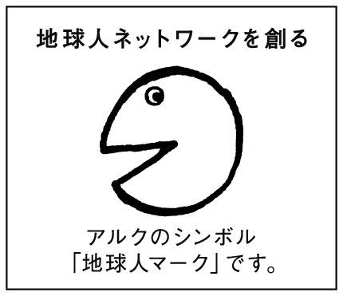

| [音声DL付]改訂版 起きてから寝るまで英単語帳 起きてから寝るまでシリーズ | |
| 荒井貴和 & 武藤克彦 | |
| (2013) | |
withoutAudioVersion
はじめに
Preface
>>人気の「起き寝る」単語編がパワーアップ！
英会話ができるようになるためには、まず自分の言いたいことが英語で言えなくてはならない。つまり、自己表現が会話の第一歩だ。
このような考え方から、「起き寝る」シリーズが誕生した。朝起きてから夜寝るまで、自分の行動や感じたことをシンプルな英語の短文でつぶやくことによって、口から自然に英語が出てくるようになるという「つぶやき訓練法」を特徴とするこのシリーズは、第1作の『起きてから寝るまで表現550』（1989年初版・アルク刊）発行以来、大きな支持を受け、すでに200万部を超えるロングセラーとなっている。「起き寝る」の英単語編である本書は自己表現力をさらに発展させるために不可欠な単語力を強化することを目的としている。発売以来、英会話やスピーキングを勉強したいと願う読者より好評を頂いているが、今回は単語数だけでなく音声面を強化することで、さらに使い勝手がアップした。
>>あなたは、身のまわりのものを全部英語で言えますか？
英語をペラペラ話せるようになりたいと思ったときの最大の壁は語彙、つまり単語や表現ではないだろうか。単語さえ知っていれば何でも意味が通じるというわけではないが、必要な単語を知らなければどうにもならない。教科書を通じて英語を「勉強」として学習してきた私たちの多くは、意外に身近な日常生活の単語を知らないことが多い。いま、みなさんのまわりにあるものをすべて英語で言えるか試してみてほしい。例えば、携帯電話、財布、定期券─これらカバンに入っているものをすべて英語で言えるだろうか？ 自分の部屋にあるものの名前はどうだろう？ 学校の授業では、日常的な単語はごく基本的なもの以外あまり取り上げられていなかったり、取り上げられていても案外忘れてしまっていたりするものだ。
まずは、いつも何気なく見たり使ったりしているものや、実際に自分がやっている動作を英語で言えるかどうか確認しよう。知っているはずの英単語でもすぐに口から出てこないのではないだろうか？ 単語を知っていると思っていても必要なときに思い出せないと実際の会話では役に立たない。
>>「知っている」だけでなく「使える」単語を増やす
あまり意識していないかもしれないが、私たちが知っている単語には、次の2種類がある。
①聞いたり見たりして、意味がわかる単語
②実際に自分で話したり書いたりして、使うことのできる単語
日本語でも、自分がふだんから「会話で使っている」語句と、新聞や小説などで使われるような「意味はわかるが日常会話ではあまり使わない」語句があるはずだ。そこで、英語の単語を覚えようとする場合、
①意味がわかればいい単語（受容語彙）
②自分が使えるレベルにまでもっていく単語（発表語彙）
この2つに分けて練習すると効率が良くなる。
「わかればいい単語」の場合は意味を覚えるだけでいいが、「使えるようにしたい単語」の場合は、聞く・見るだけでなく、発音したり、書いてみたり、さらには実際に自分で英語を使う場面をイメージしつつ、文を作ったりして、使えるようになるまで練習する必要がある。
どの単語が①、②のどちらに当たるのかは個人の生活や行動パターンなどに左右されるだろうが、本書では日常的に身のまわりにあると思われる単語や表現を重点的に取り上げた。これらの基本的な単語や表現の中から自分に合うものを取捨選択し、ボキャブラリー・ビルディングの土台にしてほしい。なお、この受容語彙・発表語彙については、本書のコラム1でもくわしく解説しているので参考にしてもらいたい。
>>感覚をフル活用し、「使える」単語を定着させる
また、単語を覚えようとする場合、「覚えてもすぐ忘れてしまう」という悩みはないだろうか。実は「忘れる」というのは人間の記憶のメカニズムの一部なのである。では、どのようにすれば記憶にとどめられるのだろうか。
まず、覚えるときにできるだけいろいろな感覚を使うと定着しやすい。例えば、絵を見る、文字を読む、耳で聞く、口で言う、手で書く─本書はこのほとんどを実現できるよう構成されている。また、「味覚」や「嗅覚」を用いて、例えば、餃子を食べるときには、dumpling、dumpling...、味が辛ければhot、hot...と頭の中でくり返してみる。また香水をつける際には、perfume、perfume...と、頭の中で唱えながら行動する。このようにして、自分の体験につなげたり、単語を使った文を考えてみたりして、単語や表現を自分のものとして取り込むとよい。
さらに、「使える」単語として記憶に定着させるには、くり返し覚え直すことも重要だ。1回だけでなく2回で覚えたほうが忘れにくくなる。一度に完璧に覚えようとするのではなく、さっと覚えたら翌日くり返してみる。そして次は1週間後、半月後、と徐々に間隔を空けて、覚えているかどうか確認するのである。そのためにも、ふだんから本書をできるだけ手元において、くり返しページをめくってみてほしい。通勤・通学などのちょっとした時間に本書を見ていくうちに、たくさんの「使える」語彙が身につくはずだ。
このたびの改訂版では、出てくる単語や表現の音声をすべて収録した。ぜひ発音を確認しながら本書を利用してほしい。また、英語と日本語の両方が入っているので、他のことをしながら耳から聞くだけでも意味がわかるようになっている。通勤や家事の時間を使って、毎日少しずつでもいいので聞いてみよう。何度もくり返し、続けることが英語上達への近道である。
本書は全部で6章それぞれ各3シーンずつ設定されているが、1章からではなく、興味のある部分から始めてかまわない。自分の身近にあるものや、面白いと思うところからどんどん取り組んでみよう。各単語はイラストを中心に状況をイメージしやすくまとめてある。さらに、次のPhrases（例文）で使い方を学び、Dialogue（会話）で雰囲気をつかむ。気に入った表現やこれは使えそうだという例文があれば、クイズを使ってテストしたり、ノートに書き写したりして覚えてほしい。
最後に、イラストレーターの石坂しづかさん、アルク英語出版編集部のみなさん、そしてこれまでの「起き寝る」シリーズに携わられた吉田研作先生をはじめとする多くの方々に心から感謝いたします。
2013年6月
荒井貴和・武藤克彦
目次
Contents
Chapter 1 ● 朝
In the Morning
Scenes: シーンで単語を覚える
1: 起床・寝室
2: 洗面所・身だしなみ
3: 朝食・食卓
Phrases: 例文で使い方を確認
Dialogue: ダイアログで会話に応用
Quick Check: クイズで覚えられたかをチェック
Chapter 2 ● 通勤・通学
On the Way to the Office or School
Scenes: シーンで単語を覚える
1: 玄関・庭
2: 駅・公共交通機関
3: 車・道路
Phrases: 例文で使い方を確認
Dialogue: ダイアログで会話に応用
Quick Check: クイズで覚えられたかをチェック
Column 1 ●英語漬け環境が「使える英語」を生む
Chapter 3 ● 会社・学校
At the Office or School
Scenes: シーンで単語を覚える
1: オフィス
2: 会議・会社組織
3: 学校・授業
Phrases: 例文で使い方を確認
Dialogue: ダイアログで会話に応用
Quick Check: クイズで覚えられたかをチェック
Chapter 4 ● 家事
Housework
Scenes: シーンで単語を覚える
1: 部屋・掃除
2: 洗濯・衣類
3: 料理・台所
Phrases: 例文で使い方を確認
Dialogue: ダイアログで会話に応用
Quick Check: クイズで覚えられたかをチェック
Column 2 ●日本語の中の「英語」をうまく利用しよう
Chapter 5 ● 外出
In the Street
Scenes: シーンで単語を覚える
1: 買い物・スーパー
2: 銀行・郵便局・病院
3: レジャー・デート
Phrases: 例文で使い方を確認
Dialogue: ダイアログで会話に応用
Quick Check: クイズで覚えられたかをチェック
Chapter 6 ● 夜
In the Evening
Scenes: シーンで単語を覚える
1: レストラン・バー
2: 帰宅・テレビ・読書
3: 風呂・就寝
Phrases: 例文で使い方を確認
Dialogue: ダイアログで会話に応用
Quick Check: クイズで覚えられたかをチェック
Column 3 ●「コロケーション」を知って語彙力をアップさせよう
Index ● 索引
How to Use This Vocab Book
本書の構成と使い方
本書では、朝起きてから夜寝るまでの生活シーンが6つの章に分けられ、それぞれの章はシーン（Scenes）、例文（Phrases）、ダイアログ（Dialogue）の3つのページパターンによって構成されています。生活シーンは一般的な1日の過ごし方の順になっていますが、興味のある個所から読んでいただいてもかまいません。本書を持ち歩き、自分のいる場所に近いシーンから見るのもよいでしょう。ここでは、各ページの構成と本書の使用例をご紹介します。
Scenes
シーンで単語を覚える
本書では、日常生活のScenesに登場する英単語を、イラストとともに掲載しています。また、イラスト付きで表示できなかった単語は、関連する語の付近にまとめてあります。単語は誌面の数字の順番で音声に収録されています。
太字で表記されている単語はPhrasesやDialogueで例文を紹介しています。
Phrases
例文で使い方を確認
ここではScenesで登場した単語の中から、特に重要なものをピックアップし、例文を紹介しています。フレーズとしてどのように使われているかを確認してください。
Dialogue
ダイアログで会話に応用
これまで学習した単語を会話に生かす練習をするためのページです。ここでは、Scenesで登場した単語・表現を織り交ぜたダイアログ（会話文）を紹介しています。実際の会話でどのように使われるかを確認してください。
さらに記憶に定着させるために......
例文やダイアログの音読練習を発展させて、シャドーイング練習をするのもおすすめです。シャドーイングとは、英語の音声を流しながら耳で聞いたことをすぐさま口で言う練習です。慣れないうちは、音声のスピードについていけないかもしれませんが、何度も繰り返し練習してください。スムーズに言えるようになるまで続ければ、その単語・表現が自分のものとして身に付いているはずです。発音だけでなくリズムやイントネーションもまねると効果的です。なお、単語の覚え方は人それぞれです。ここでご紹介する方法は学習例の1つとして参考にしながら、ご自分に合った方法で本書を有効活用してください。
Quick Check
クイズで覚えられたかをチェック
各章の最後に、Phrasesの主要な例文を復習するためのクイズを用意しました。
本書の表記について
各語の後に四角で囲まれた記号は、それぞれ品詞を示します。
例：→名詞、→動詞
なお、本書は特に記述のない限り、アメリカ英語の表記・音声を収録しています。そのほか、記号については、以下を参照してください。
| ※ | 単語の後の※印以降は、その語に関するコメント・解説 |
|---|---|
| . . ./. . . | スラッシュの前後の下線部は入れ替え可能 |
| ( . . . ) | ( )内は省略可 |
| to do | 不定詞が続く |
| -ing | 動詞の-ing形が続く |
| 〜 | 語が続く |
| . . . | 複数の語、節が続く |
| one's | 名詞・代名詞の所有格 |
無料ダウンロード音声について
本書に対応する音声は、すべて無料でダウンロードしていただけます。下記URLにアクセスし、『改訂版起きてから寝るまで英単語帳』を選択、フォームに必要事項をご記入の上送信いただくと、ダウンロードページURLのご案内メールが届きます。
ALC Download Center
ダウンロードセンター
http://www.alc.co.jp/dl/
（2014年11月時点の情報。今後詳細が変更になる可能性があります）
ダウンロードした音声ファイルはiTunesなどの音声再生ソフトで取りこんでご利用ください。音声再生ソフトでのファイルの取り込み方法や携帯音楽プレーヤーでの利用方法については、ソフトやプレーヤーに付属するマニュアルでご確認ください。
取り込んだ音声ファイルはChapter1～6のフォルダに分かれています。
音声再生ソフトでは次のように表示されます。
出版社名（アーティスト名）：「ALC PRESS INC.」と表示。
書名（アルバム名）：
『改訂版起きてから寝るまで英単語帳』
トラック名（曲名）：どの学習に必要な音声なのかがすぐわかるよう、 [001 C1_Scene1_寝室]のように表示されます。（CはChapter番号です）
本書では、ダウンロードした音声はDLC1_01のように、トラックの通し番号で記載しています。該当のトラックを再生して学習してください。
Chapter 1●シーンで単語を覚える
Chapter 1●例文で使い方を確認
Phrases 1
DL C1_07
□ table lamp
電気スタンド
My roommate often leaves thetable lamp on all night long.
私のルームメートはよく一晩中電気スタンドをつけっぱなしにする。
＊ leave ~ onで「～（電化製品など）をつけっぱなしにする」という意味。
□ alarm clock
目覚まし時計
I didn't know thealarm clock went off.
私は目覚まし時計が鳴ったのに気が付かなかった。
＊ go offで「（警報機などが）鳴り出す」という意味。
□ get out on the wrong side of the bed
寝起きが悪い、朝から機嫌が悪い
My sister doesn't seem happy. She musthave gotten out on the wrong side of the bed.
姉さんは機嫌がよくないみたい。きっと寝起きが悪かったんだろう。
＊ getup on/out of the wrong side of the bedと言う場合もある。
□ yawn
あくびをする
I stretched andyawned before getting out of bed, but I still felt sleepy.
ベッドから出る前に伸びをしてあくびをしたけど、まだ眠かった。
□ rub one's sleepy eyes
眠い目をこする
I looked out the window,rubbing my sleepy eyes.
私は眠い目をこすりながら窓の外を見た。
＊ 現在分詞-ingで「～しながら」という付帯状況を表す。
DL C1_08
□ sleep wrong
寝違える
I have a stiff neck. I mighthave slept wrong.
首が曲がらない。寝違えたのかも。
＊ have a stiff neckで「首が曲がらない、肩がこる」。shoulder（肩）の痛みにもneckを使うので注意。stiffは形容詞で「（筋肉などが）こった、こわばった」という意味。
□ sore muscles
筋肉痛
I havesore muscles. I shouldn't have played tennis for so many hours yesterday.
筋肉痛だわ。昨日、あんなに何時間もテニスするんじゃなかったな。
＊ 「shouldn't have＋過去分詞」で「～すべきじゃなかった」の意味。
□ hangover
二日酔い
Ugh. I have a badhangover. I'll have to be careful not to drink too much in the future.
ううっ。ひどい二日酔いだわ。今後は飲みすぎないように注意しないと。
＊ ughは嫌悪や不快感を表す間投詞。
□ oversleep
寝坊する
Oh, I've overslept! Not again.
ああ、寝坊しちゃった！ もうイヤ。
＊ Not again.は「またか。もう、たくさんだ」という意味の決まり文句。
□ fold (up) ~
～をたたむ
It's time to get up!Fold up your futon and put it in the closet.
起きる時間よ！ 布団をたたんで、押し入れにしまいなさい。
＊ upが付くと「最後まできちんとたたむ」というニュアンスが出る。
DL C1_09
□ turn on ~
～をつける
Iturn on the TV and watch the weather report every morning.
毎朝、テレビをつけて天気予報を見る。
＊ 「～を消す」は、turn off ~。turnの代わりに、switchを使うこともできる。
□ closet
押し入れ、クローゼット
There're some suits hanging in thecloset.
クローゼットの中には、何着かのスーツが掛かっている。
□ chest of drawers
タンス
Take your socks out of thechest of drawers and put them on.
タンスから靴下を出して履きなさい。
□ dress shirt
ワイシャツ
Do you think this tie goes with thisdress shirt?
このネクタイ、このワイシャツに合うと思う？
＊ go with ~で「～に合う、～と調和する」という意味。
□ zip up ~
～のファスナーを閉める
Will you help mezip up my dress?
ドレスのファスナー閉めるのを手伝ってくれる？
Chapter 1●ダイアログで会話に応用
Dialogue 1
DL C1_10
- Lisa:
- Good morning, Tom. Did you have a good night'ssleep? I①heard you go downstairs last night.
- Tom:
- Oh, no,②actually, I didn'tsleep well. I drank too much at the party last night. Ifelt sick and went to the bathroom③in the middle of the night.
- Lisa:
- ④That's too bad. Are you OK now?
- Tom:
- Yeah.⑤Except for a terriblehangover.
- Lisa:
- Why don't you take some medicine?
- Tom:
- Yeah, I will. Where can I find it?
- Lisa:
- In thecloset in ourbedroom.
- Tom:
- OK. Thank you.
- リサ：
- おはよう、トム。よく眠れた？ 昨夜、1階に下りていくのが聞こえたけど。
- トム：
- ああ、いや、実は、よく眠れなかったんだ。昨夜のパーティーで飲みすぎてね。夜中、気分が悪くなってトイレに行ったんだ。
- リサ：
- まあ、気の毒に。もう大丈夫なの？
- トム：
- うん。ひどい二日酔い以外はね。
- リサ：
- 薬を飲んだらどう？
- トム：
- うん、そうするよ。どこにあるの？
- リサ：
- 寝室のクローゼットの中にあるわ。
- トム：
- 分かった。ありがとう。
①「知覚動詞hear（聞こえる）＋人＋動詞の原形」で「～（人）が...するのを耳にする」と言う意味。go downstairsは「下の階に行く」。
②actuallyは、「実は」と何かを打ち明けるようなときに用いる。
③in the middle of ~で「～の途中で、～の最中に」。
④That's too bad.（気の毒に）は同情を示すときの決まり文句。
⑤except for ~は「～を除けば」という意味。
Chapter 1●シーンで単語を覚える
Chapter 1 ● 例文で使い方を確認
Phrases 2
DL C1_18
□ bathroom
洗面所、トイレ
May I use yourbathroom?
お手洗いを貸していただけますか？
＊ 欧米では、トイレが浴室にあることが多いので、こう言う。公共の建物にあるトイレはrestroomと言う。
□ faucet
（水道の）蛇口
I turned on thefaucet and filled the washbowl with hot water.
私は蛇口をひねって、洗面器にお湯をためた。
＊ fill A with Bで「AをBでいっぱいにする」という意味。
□ toothpaste
歯磨き粉
I squeezed out sometoothpaste on the toothbrush.
私は歯ブラシの上に歯磨き粉を絞り出した。
□ gargle
うがいをする
Gargle when you get home so you won't catch a cold.
風邪をひかないよう、家に帰ったらうがいをしなさい。
＊ so you won't . . .で「... しないように」の意味。
□ swell
むくむ
My faceis swollen after sleeping 12 hours straight.
12時間も寝続けたので、顔がむくんでいる。
＊ swollenはswellの過去分詞形だが、「膨れた、腫れた」という形容詞として使われる。なお、ここでのstraightは副詞で「続けて、途切れずに」を意味する。
DL C1_19
□ contact (lens)
コンタクトレンズ
Gee, I dropped mycontact lens on the floor.
しまった、コンタクトレンズを床に落としちゃった。
＊ geeは軽い驚きを表す間投詞。
□ pimple
にきび
You have apimple on your right cheek. Don't pick at it.
右のほおに、にきびがあるよ。つぶさないようにね。
＊ pick at ~で「～をつつく、ほじくる」という意味。
□ electric shaver
電気かみそり
Thiselectric shaver doesn't work. It needs recharging.
この電気かみそり、動かないや。充電しないと。
＊ rechargeは動詞で「再充電する」という意味。また、need -ingで「～される必要がある」。
□ mustache
口ヒゲ
My father looks younger after shaving off hismustache.
口ヒゲをそったので、父は前より若く見える。
□ perfume
香水
My boyfriend doesn't like women wearing strongperfume.
私の彼はきつい香水をつけている女性が苦手だ。
DL C1_20
□ pencil one's eyebrows
まゆ毛を描く
Don't I look different when Ipencil my eyebrows?
まゆ毛を描くと、私、別人に見えない？
□ comb one's hair
髪をくしでとかす
Why don't youcomb your hair? It's messy.
髪をとかしたらどう？ ぼさぼさよ。
＊ Why don't you . . . ?で「...してはどうですか？」という慣用表現。
□ blow-dry
ドライヤーで乾かす、整髪する
It usually takes 10 minutes toblow-dry my hair.
ドライヤーで髪を乾かすのにいつも10分かかる。
＊ 「It takes＋時間＋to do」で「～するのに...かかる」という意味。
□ toilet seat
便座
Dad! Put thetoilet seat back down after using it.
お父さん！ 使ったら便座を下げておいてよ。
□ flush
水がどっと流れる
The toilet won'tflush. It's probably clogged.
トイレが流れない。たぶん、詰まっているんだろう。
＊ be cloggedは「（トイレ・排水溝などが）詰まっている」の意味。
Chapter 1●ダイアログで会話に応用
Dialogue 2
DLC1_21
- Jim:
- (knocking on thebathroom door) Is someone in there?
- Lucy:
- Yeah, Daddy. I'mdrying off so don't try to open the door.
- Jim:
- Oh, OK.①How long will it take?
- Lucy:
- Well, maybe 30 minutes.
- Jim:
- Thirty minutes? Why so long?
- Lucy:
- I have a②big date today and I need tostyle my hair andput on makeup.
- Jim:
- A big date? You're too young. Anyway, I want to use thetoilet. Get out right now!
- Lucy:
- OK, OK.③I'm coming.④Wait a minute!
- ジム：
- （トイレのドアをノックしながら）誰か入ってる？
- ルーシー：
- ええ、パパ。体をふいているところだから、ドアを開けようとしちゃダメよ。
- ジム：
- ああ、分かったよ。あとどのくらいかかるかな？
- ルーシー：
- ええと、30分くらいかしら。
- ジム：
- 30分だって？ なんでそんなにかかるんだい？
- ルーシー：
- 今日は大事なデートがあって、髪を整えてお化粧しないと。
- ジム：
- 大事なデートだって？ お前には早すぎるよ。とにかくトイレを使いたいんだ。すぐ出なさい！
- ルーシー：
- 分かったわ。出るから。ちょっと待って！
①所要時間を聞くときの決まり文句。
②ここでのbigは「重要な」くらいの意味。
③呼ばれた場合などに、聞き手のところへ「すぐ行きます」と言うときの表現。
④「ちょっと待って」と言うときの決まり文句。
Chapter 1●シーンで単語を覚える

Chapter 1 ● 例文で使い方を確認
Phrases 3
DL C1_29
□ breakfast
朝食
What would you like to drink with yourbreakfast?
朝食には何をお飲みになりますか？
□ fix breakfast
朝食を作る
I'llfix youbreakfast if you don't feel well, Mom.
気分がよくないなら、私が朝食を作るわ、お母さん。
□ skip breakfast
朝食を抜く
You shouldn'tskip breakfast even if you are on a diet.
ダイエットしているからといって朝食を抜くべきじゃないわ。
＊ even if . . . で「たとえ...でも」、be on a dietで「ダイエットしている」という意味。
□ serve
給仕する、（食事を）出す
Do theyserve a continental or an English breakfast at the hotel?
そのホテルでは、コンチネンタル式と英国式、どっちの朝食が出されるの？
＊ continentalの後にはbreakfastが省略されている。
□ salt shaker
塩入れ
Will you pass me thesalt shaker?
その塩入れ、取ってくれない？
＊ 「塩入れ」でもshake（振り掛ける）しない容器は、saltcellarと言う。
DL C1_30
□ put butter on the bread
パンにバターを塗る
Why don't youput some butter on the bread? It would taste better that way.
パンにバターを塗ったら？ そうすればもっとおいしくなるんじゃないかしら。
＊ このwayは「やり方、方法」を表す。(in) that wayで「その方法で」という意味。
□ omelet
オムレツ、タマゴ焼き
Which would you prefer, anomelet or fried eggs?
タマゴ焼きと目玉焼き、どっちがいい？
□ eat soup
スープを飲む
I can'teat thissoup. It's a little too hot.
このスープ、飲めないわ。ちょっと熱すぎる。
□ fermented soybeans
納豆
I don't likefermented soybeans. The smell is awful.
納豆は好きじゃない。においがひどいんだもの。
＊ awfulは「ひどい、嫌な、汚い」という意味。
□ salty
しょっぱい
Wow, these bacon and eggs are verysalty. Can I get some water, please?
わあ、このベーコンエッグ、すっごくしょっぱい。お水、もらえますか？
＊ bacon eggとは言わないので注意。また、タマゴが1つのときは、eggは単数になる。
DL C1_31
□ aroma
（食べ物やコーヒーなどの）香り
Mmm, I love thearoma of this coffee.
ん～、このコーヒーの香り、大好き。
□ decaf (coffee)
カフェイン抜きのコーヒー
Can I have adecaf coffee? I often can't sleep after drinking regular coffee.
カフェイン抜きのコーヒー、いただけませんか？普通のコーヒーを飲むと、眠れないことがよくあるんです。
□ roll up one's sleeves
そでをまくる
You shouldroll up your sleeves before washing the dishes.
お皿を洗う前にそでをまくったほうがいいわ。
＊ roll up one's sleevesで「本気になって取り組む」の意味もある。
□ scouring brush
たわし
Use ascouring brush and dish detergent for the grease on the pan.
鍋の油汚れには、たわしと食器用洗剤を使いなさい。
＊ greaseは「油脂」。ここでは「油汚れ」のこと。
□ dishcloth
ふきん
After I wash the dishes, will you dry them with thedishcloth?
私が皿を洗ったら、ふきんでふいてくれる？
Chapter 1●ダイアログで会話に応用
Dialogue 3
DLC1_32
- Kate:
- Breakfast is ready. Come and sit down.
- Mike:
- Morning, Mom. It①lookstasty but I'm not hungry right now.
- Kate:
- Well, you shouldeat breakfast.②Just③a little bite.
- Mike:
- OK. I'll have a bit ofcereal and . . . what's this?
- Kate:
- It's vegetablesoup. You caneatit, can't you?
- Mike:
- Yeah, I'll have this, too. Do you want me to pour some milk onto your cereal?
- Kate:
- Thank you. I'm going tomake some coffee.④Would you like some?
- Mike:
- ⑤No thanks.Strong coffee is not good for my stomach.
- ケイト：
- 朝ごはんができたわよ。こっちへ来て座りなさい。
- マイク：
- おはよう、ママ。おいしそうだけど、いまは食欲がないんだ。
- ケイト：
- あら、朝食は食べないとダメよ。ほんの一口だけでも。
- マイク：
- うん。シリアルをほんの少しと......これは何？
- ケイト：
- 野菜スープよ。これは食べられるでしょ。
- マイク：
- じゃ、それも食べるよ。シリアルにミルクをかけてあげようか？
- ケイト：
- ありがとう。コーヒーを入れるわ。いる？
- マイク：
- いや、いいよ。濃いコーヒーは胃に良くないからね。
①「look＋味覚を表す言葉」で「～のように見える」。
②justは、a little（少し）を強調している。
③a biteで「一口、軽い食事」という意味。
④Would you like some coffee?を省略した形。
⑤誘いを断るときの決まり文句。「結構です」という意味。
Chapter 1 ●クイズで覚えられたかをチェック
Quick Check
本章に登場した単語の中から（ ）内に当てはまるものを選び、自分で言ってみましょう。
□ 1 . I ( ) ( ) the TV and watch the weather report every morning.
Phrases 1 を参照
毎朝、テレビをつけて天気予報を見る。
□ 2 . May I ( ) your ( )?
Phrases 2 を参照
お手洗いを貸していただけますか？
□ 3 . It usually takes 10 minutes to ( ) ( ) ( ).
Phrases 2 を参照
ドライヤーで髪を乾かすのにいつも10分かかる。
□ 4 . I ( ) a stiff neck. I might have ( ) ( ).
Phrases 1 を参照
首が曲がらない。寝違えたのかも。
□ 5 . What would you like to ( ) with your ( )?
Phrases 3 を参照
朝食には何をお飲みになりますか？
□ 6 . My father looks younger after shaving off his ( ).
Phrases 2 を参照
口ヒゲをそったので、父は前より若く見える。
□ 7 . There're ( ) ( ) hanging ( ) the ( ).
Phrases 1 を参照
クローゼットの中には、何着かのスーツが掛かっている。
□ 8 . After I wash the ( ), will you dry them with the ( )?
Phrases 3 を参照
私が皿を洗ったら、ふきんでふいてくれる？
□ 9 . Will you ( ) ( ) the ( ) ( )?
Phrases 3 を参照
その塩入れ、取ってくれない？
□ 10 . I didn't know the ( ) ( ) ( ) off.
Phrases 1 を参照
私は目覚まし時計が鳴ったのに気が付かなかった。
解答 1. turn / on 2. use / bathroom 3. blow-dry / my / hair 4. have / slept / wrong 5. drink / breakfast 6. mustache 7. some / suits / in / closet 8. dishes / dishcloth 9. pass / me / salt / shaker 10. alarm / clock / went
Chapter 2●シーンで単語を覚える
Chapter 2 ● 例文で使い方を確認
Phrases 1
DL C2_07
□ upstairs
階上に
Pochi isupstairs. Go and get him.
ポチは2階にいるよ。行って連れてきて。
□ apartment
アパート、マンション
Myapartment is a 15-minute walk from the station.
僕のアパートは駅から歩いて15分なんだ。
＊ a 15-minute walk from ~で「～から徒歩15分」。ハイフンの後は単数形。
□ condominium
分譲マンション
I've been thinking about buying acondominium. What do you think?
分譲マンションを買おうと思っているんだ。君はどう思う？
□ reinforced concrete
鉄筋コンクリート
My apartment is made withreinforced concrete.
僕のマンションは鉄筋コンクリートでできている。
□ lock
鍵を掛ける
Did youlockthe back door? There are a lot of thieves out there these days.
勝手口の鍵、掛けた？ 最近、泥棒が多いからね。
＊ thievesは名詞thief（泥棒、盗っ人）の複数形。out thereは「世の中には」の意味。
DL C2_08
□ loafer(s)
ローファー、紳士靴（ひもナシ）
I preferloafers to oxfords. Loafers are easier to put on.
ひも靴よりローファーのほうがいいや。ローファーは履くのが楽だし。
＊ prefer A to Bで「BよりAが好き」。
□ flat(s)
かかとの低い靴
I usually wearflats when I go shopping.
普段、私は買い物に行くときは、かかとの低い靴を履きます。
□ shoehorn
靴べら
Theshoehorn is beside the shoe cabinet. Use it if you like.
靴べらはげた箱の横にあります。よろしければお使いください。
＊ if you likeで「よろしかったら」という決まり文句。
□ put up an umbrella
傘を差す
Don'tput up an umbrella when you're riding a bike. It's dangerous.
自転車に乗っているとき傘を差しちゃだめだ。危険だよ。
＊ 「傘を閉じる」は、close/fold an umbrella。
□ peephole
のぞき穴
Look through thepeephole to see who it is before opening the door.
ドアを開ける前に、のぞき穴から誰かを確認しなさい。
＊ look through ~で「～を通して見る」という意味。
DL C2_09
□ bump into ~
～（人）に偶然会う、～に出くわす
Rushing out of my apartment, Ibumped into the super.
アパートから飛び出したときに、管理人にばったり会った。
＊ この場合のapartmentは自分の部屋のこと。建物全体を言うときは、apartment building。
□ take ~ out for a walk
～を散歩に連れていく
Will youtake Pochiout for a walk?
ポチを散歩に連れていってくれる？
□ hedge
生け垣、垣根
I said hello to my neighbor over thehedge this morning.
今朝、垣根越しに隣人にあいさつした。
□ tropical fish
熱帯魚
I have 20tropical fish in a tank in the living room.
私はリビングにある水槽で熱帯魚を20匹飼っています。
□ bud
つぼみをつける、芽を出す
Look! The morning glories in the flowerpotsare budding.
見て！ 植木鉢の朝顔がつぼみをつけているよ。
＊ morning gloryとは「朝顔」のこと。
Chapter 2 ●ダイアログで会話に応用
Dialogue 1
DLC2_10
- Mike:
- I'm late for school! I have to hurry.
- Kate:
- Don't run down thestairs, Mike.
- Mike:
- Yes, Mom.①How's the weather today?
- Kate:
- It's raining a little, so take yourumbrella with you.
- Mike:
- OK. But I think araincoat②would be better because I'mgoing to school by bike today.
- Kate:
- ③Right. Holding an umbrella when you're riding a bike is dangerous.④What aboutrain boots?
- Mike:
- No, thank you.Sneakers are⑤fine.
- Kate:
- All right. You should get up earlier tomorrow so you don't have torush out of the house, Mike.
- マイク：
- 学校に遅れちゃうよ！ 急がなくちゃ。
- ケイト：
- 階段を走って降りないで、マイク。
- マイク：
- はーい、ママ。今日の天気はどう？
- ケイト：
- 少し雨が降っているから、傘を持っていきなさい。
- マイク：
- 分かった。でも、今日は自転車で学校に行くから、レインコートのほうがいいかもしれないよ。
- ケイト：
- そうね。自転車に乗っているときに傘を差すのは危険だわ。長靴にしたら？
- マイク：
- いや、いいよ。スニーカーで大丈夫。
- ケイト：
- そう。急いで家を出なくていいように、明日はもっと早く起きるのよ、マイク。
①天気を聞くときの決まり文句。How'sはHow isの省略形。
②このwouldは「～かもしれない」という現在の推量を表す。
③相手の意見に同意して「その通り」という意味。
④What about ~?は、ここでは「～はどう？」という提案の意味。
⑤このfineは「十分で」の意味。
Chapter 2●シーンで単語を覚える
Chapter 2 ● 例文で使い方を確認
Phrases 2
DL C2_18
□ exit
出口
Wait at the westexit. I'll pick you up.
西口で待っていて。車で迎えに行くよ。
＊ pick ~ upで「～を車で迎えに行く」という意味。
□ timetable
時刻表
Let's check thetimetable to see how often trains come.
電車がどれくらいの間隔で来るのか、時刻表をチェックしよう。
＊ how oftenは、直訳すると「どのくらい頻繁に」という意味。
□ turnstile
改札
Oops! I got stopped by theturnstile.
おっと！ 改札に引っ掛かっちゃった。
＊ oopsは軽いへまや失敗をしたときなどに使う間投詞。
□ pass
定期券、パス
Thispass has expired.
この定期券は有効期限が切れてしまった。
＊ expireは「（契約・保証などの）期限が切れる」という意味の動詞。
□ put money on a smart card
ICカードをチャージする
I need toput money on mysmart card.
ICカードをチャージしないと。
＊ 英語のchargeは、この意味では使われないので注意。
DL C2_19
□ fare
運賃
How much is thefare to Shinjuku?
新宿までの運賃はいくらですか？
□ fare adjustment
乗り越し清算
Wait, I have to make a fare adjustment before passing through the turnstile.
待って、改札を出る前に乗り越し清算しないと。
＊ adjustmentは名詞で「調整」、動詞はadjustで「（差異などを）調整する」という意味。
□ get off
降りる
Take my seat. I'm getting off at the next stop.
座ってください。私は次の駅で降りますから。
□ transfer to ~
～に乗り換える
We had bettertransfer to a rapid train at the next station.
次の駅で、快速に乗り換えたほうがいいな。
□ get crushed
押しつぶされる
I'm tired ofgetting crushed on the train every morning.
毎朝、電車で押しつぶされるのはうんざりだ。
＊ be tired of ~で「～に飽きている、うんざりしている」という意味。
DL C2_20
□ step on someone's foot
～（人）の足を踏む
Someonestepped on my foot but I didn't see who it was.
誰かが僕の足を踏んだけど、それが誰だか分からなかった。
□ molest
痴漢をする
Oh, no! That guy is trying tomolest a woman.
なんてこった！ あいつ、女性に痴漢しようとしているぞ。
＊ guyは「やつ、男」の意味。主に会話で使われる。
□ sleep past one's station
寝ていて駅を乗り越す
I sometimessleep past my station when I'm tired.
疲れていると、寝ていて駅を乗り越すことがある。
□ the last train
終電
What time doesthe last train leave?
終電は何時に出ますか？
□ depot
（バスの）発着所
Every bus starts from thedepot over there.
どのバスも、あそこの発着所から出発します。
Chapter 2 ●ダイアログで会話に応用
Dialogue 2
DLC2_21
- Lucy:
- Do you know how to①get to the Central Hospital?
- Jim:
- Yeah. First, we'll take anexpress train to Eastbridge and thenchangeto the OrangeLine there.
- Lucy:
- And after that?
- Jim:
- When we arrive at Northend, we'll take amunicipal bus②the rest of the way.
- Lucy:
- OK. And③how long will it take?
- Jim:
- Usually it takes about 35 minutes, but today is Sunday, so we'll have to④allow at least 50 minutes.
- Lucy:
- We have enough time anyway.⑤Why don't we get something to eat at thatkiosk over there?
- Jim:
- That's a great idea. Let's go.
- ルーシー：
- 中央病院にどうやって行くか分かる？
- ジム：
- ああ。まず、イーストブリッジまで急行電車に乗って、そこでオレンジ線に乗り換えるんだ。
- ルーシー：
- それから？
- ジム：
- ノースエンドに着いたら、あとは市営バスに乗るんだよ。
- ルーシー：
- 分かった。それで、どのくらいかかるの？
- ジム：
- たいてい35分くらいだけど、今日は日曜日だから、少なくとも50分は必要かな。
- ルーシー：
- いずれにしても、私たちには十分時間があるしね。あそこのキオスクで何か食べるものを買わない？
- ジム：
- いいね。行こう。
①get to ~で「～に着く、行く」の意味。
②the rest of ~で「残りの～」の意味。また、このwayは「道のり」を表す。
③所要時間を聞くときの決まり文句。
④このallow（[əláu]発音に注意）は、「許す」ではなく「（時間などを）割り当てる」の意味。
⑤Why don't we ~?は「～しませんか？」という意味。自分を含めて何かしようと提案するときに使う。
Chapter 2●シーンで単語を覚える

Chapter 2 ● 例文で使い方を確認
Phrases 3
DL C2_28
□ vehicle
車、車両（全般的に）
Vehicles are going up and down the street.
車が通りを往来している。
□ (steering) wheel
（車の）ハンドル
Don't hold thesteering wheel too tightly when you drive.
運転するときは、ハンドルをあまりきつく握らないようにしなさい。
＊ tightlyは「しっかりと、きつく」という意味。
□ emergency brake
サイドブレーキ
Don't forget to release theemergency brake before you start driving.
車を出す前に、サイドブレーキを下ろすのを忘れないように。
□ pull over
片側に寄せる、車を路肩に止める
Pull over here. That's where I want to shop.
ここで車を止めて。あれが買い物したいところなんだ。
＊ pull out（［車が］出発する）やpull up（［車が］止まる、車を止める）など、車の動きにはpullを使うことが多い。
□ parking lot
駐車場
Is there any space for me in theparking lot?
駐車場には、私の車を止めるスペースがありますか？
DL C2_29
□ stall
エンストを起こす
This is an automatic car and it rarelystalls.
これはオートマ車で、めったにエンストしない。
＊ rarelyは「めったに～しない」。
□ bumpy
でこぼこの
Wow, this road is sobumpy I might bite my tongue.
おっと、この道路はすごくでこぼこだから、舌をかみそうだ。
＊ so ~ (that) . . . 「とても～なので...だ」の意味になる。
□ detour
回り道
There was road construction so I had to take adetour.
道路工事があったので、回り道しなければならなかった。
□ lane
車線
I changedlanes and slowed down.
私は車線を変更して、スピードを落とした。
＊ 車線変更には、2つ以上の車線がかかわるのでlaneが使われる。
□ pedestrian
歩行者
When you're riding a bike, watch out forpedestrians walking on the sidewalk.
自転車に乗っているときは、歩道を歩いている歩行者に気を付けなさい。
＊ watch out for ~で「～に気を付ける」。
DL C2_30
□ traffic jam
交通渋滞
It took longer than usual to get to my office because of thetraffic jam.
交通渋滞のため、会社に着くのにいつもより長くかかった。
＊ than usualで「いつもより」の意味。
□ run out of gas
ガソリンがなくなる、ガス欠になる
We should go to a gas station before werun out of gas.
ガス欠になる前に、ガソリンスタンドに寄るべきだね。
□ fill ~ up
～を（ガソリンで）満タンにする
Fill itup and check the oil, please.
ガソリン満タンにして、オイルの点検をお願いします。
＊ ここでのitは、話者の乗っている車両を指す。fill it upはfill it up with gasを略した言い方。
□ flat tire
パンク（したタイヤ）
I got aflat tire on the way so I was late for work this morning.
途中でタイヤがパンクしたので、今朝、仕事に遅れてしまった。
□ (driver's) license
免許証
Show me yourdriver's license, will you?
免許証を見せてくれませんか？
Chapter 2 ●ダイアログで会話に応用
Dialogue 3
DLC2_31
- Tom:
- Hey,①what atraffic jam!②We're stuck here. Was there atraffic accident or something?
- Lisa:
- ③Gee, I have no idea, but actually there was one at thisintersection last week.
- Tom:
- Really? What happened?
- Lisa:
- AnSUV speeding in the passing lane④bumped into theguardrail.
- Tom:
- Wow! Was thedriver all right?
- Lisa:
- Fortunately, he was OK.⑤Anyway, what should we do now?
- Tom:
- ⑥Take adetour at the nextcorner?
- Lisa:
- That sounds good.
- トム：
- ああ、なんて渋滞なんだ！ ここから全然動い ていないよ。交通事故か何かがあったのかな？
- リサ：
- さあ、分からないけど、実は先週、この交差点で1件、あったのよ。
- トム：
- 本当に？ 何があったんだい？
- リサ：
- SUVが追い越し車線でスピードを出し過ぎて、ガードレールにぶつかったの。
- トム：
- へえ！ 運転手は大丈夫だったのかい？
- リサ：
- 運よく、彼は無事だったわ。とにかく、これからどうする？
- トム：
- 次の角で迂回しようか？
- リサ：
- それがよさそうね。
①「What a ＋（形容詞）＋名詞！」は、驚き・怒り・不信などを表す感嘆文。ここでは「なんていう（ひどい）～なんだ！」の意味。
②be stuckで「動けなくなる、立ち往生する」の意味。
③軽い驚きを表す間投詞。
④このbump into ~ は「～にぶつかる、衝突する」。
⑤話を本題に戻すときに使うanyway（それはともかく）。
⑥takeの前にShould weが省略されている。会話ではこのような省略がよくある。
Chapter 2 ●クイズで覚えられたかをチェック
Quick Check
本章に登場した単語の中から（ ）内に当てはまるものを選び、自分で言ってみましょう。
□ 1 . My ( ) is a 15-minute ( ) from the station.
Phrases 1 を参照
僕のアパートは駅から歩いて15分なんだ。
□ 2 . How much is the ( ) to Shinjuku?
Phrases 2 を参照
新宿までの運賃はいくらですか？
□ 3 . This ( ) has expired.
Phrases 2 を参照
この定期券は有効期限が切れてしまった。
□ 4 . Rushing out of my apartment, I ( ) ( ) the ( ).
Phrases 1 を参照
アパートから飛び出したときに、管理人にばったり会った。
□ 5 . Wait at the ( ) ( ). I'll pick you up.
Phrases 2 を参照
西口で待っていて。車で迎えに行くよ。
□ 6 . Is there any space for me in the ( ) ( )?
Phrases 3 を参照
駐車場には、私の車を止めるスペースがありますか？
□ 7 . What time does ( ) ( ) ( ) leave?
Phrases 2 を参照
終電は何時に出ますか？
□ 8 . Pochi is ( ). Go and get him.
Phrases 1 を参照
ポチは2階にいるよ。行って連れてきて。
□ 9 . ( ) ( ) here. That's where I want to shop.
Phrases 3 を参照
ここで車を止めて。あれが買い物したいところなんだ。
□ 10 . Take my seat. I'm getting off at the ( ) ( ).
Phrases 2 を参照
座ってください。私は次の駅で降りますから。
解答 1. apartment / walk 2. fare 3. pass 4. bumped / into / super 5. west / exit 6. parking / lot 7. the / last / train 8. upstairs 9. Pull / over 10. next / stop
Column 1
行動リストと付箋で作る
英語漬け環境が「使える英語」を生む
武藤克彦
Text by Katsuhiko Muto
>>英単語を「知っている」って、どういうこと？
「単語はたくさん知っているのに、なぜ英語が話せないんだろう？」「受験で英単語を暗記したのに話せない」と悩んだり、疑問に思ったりしている人は多いのではないだろうか？
単語の知識には、英単語を見聞きしたときに意味を理解できる単語（受容語彙）と自ら必要に応じて使用できる語彙（発表語彙）という、2種類がある。これを考えると、英語を使いこなせない多くの日本人は、受容語彙しか身に付いていないのではないだろうか？ 「英単語を覚える＝単語帳を暗記」という受動的学習法が中心で、ちまたにあふれる単語帳は、英単語と訳語の羅列ばかり。テストに向けてそのような学習をするのは仕方がないが、英単語を自ら使って会話するためには、やはり発表語彙が重要になるのである。
>>受験英語と日常生活英語の違いはココにあり
ここで、受容語彙と発表語彙の違いを、例を挙げて説明しよう。例えば、あなたが大学受験生で、以下の英文を読んだとする。
- (1)
- Interest in portable audio really started totake off in the 1980s with the development of personal music players...
- （個人用の音楽再生機器の発達とともに、携帯型オーディオへの興味が1980年代に実際に高まりを見せ始めた...）［大学入試センター試験・2014年］
(1)のtake offはたくさんの意味を持つ句動詞。take offについて「人気が出る」という意味を知っていれば、あなたにとってtake offは「受容語彙」と言える。しかし、冬の雪の日、英語を話す知人宅のパーティーに招かれ、
- (2)
- Itook off my coat and a pair of gloves before I entered the house.
- （家に入る前にコートと手袋を脱いだ）［本書Chapter 4 Phrases 2］
と、スムーズに英語で言うことができたら、take off ～（～を脱ぐ、外す）はあなたにとって「発表語彙」だ。同様に、パーティーから自宅に帰り、女性であれば以下のように言うこともあるだろう。
- (3)
- Itake off my makeup as soon as I come home.
- （私は家に帰ったらすぐに化粧を落とす）［本書Chapter 6 Phrases 3］
単語や句動詞はすべての意味を画一的に暗記するのではなく、自分の生活や仕事で必要な受容語彙と発表語彙を区別して覚えるといい。スピーキング上達のためには、普段の生活でtake off my pajamas（本書Chapter 1 Scenes 1）やtake off my shoes（本書Chapter 6 Scenes 2）と発表語彙を使いながら増やそう。
>>英語で考える習慣を身に付けるための秘密兵器
それでは、どうしたら発表語彙を増やすことができるだろうか？ 重要なのは、次の2つ。
①簡単な動作・事物の状態を英語で表せること
②身の回りにあるものを英語で言えること
まず①については、起きてから寝るまでの自分の行動を10個、日本語でリストを作る。そして、それらを英語にしてみよう（例えば、I get up at six every day.〈毎日6時に起きる〉）。英訳する際は、ぜひ本書の例文を参考にしてもらいたい。リストが完成したら、それを持ち歩き、毎日その行動をする際に口に出して（もしくは頭の中で）繰り返す。毎日の生活が劇的に変わらなければ、1週間程度続けるとたいてい覚えられるはずだ。そのうち、リスト以外の気になる動作も出てくるだろう。それらを調べてどんどんリストに加え、翌週の課題にしよう。これを繰り返せば、自分が自分のために使える語彙・表現が目に見えて増えていくはずだ。
②に関しては、自分の家や部屋を見渡し、そこにあるものを次々と英語で言ってみよう。分からないものや曖昧なものがあったら、本書のイラストや和英辞書でチェック。英訳を確認したら、その英単語を付箋（post-it）に書いて、そのものに貼り付けていく。こうすれば、毎日嫌でも英単語が目に入るので無理なく覚えていくことができる。また、本書に載っていない単語があったら、空いているスペースに書き足したり、本書を常に持ち歩いたりするのもよいだろう。「使える」語彙を増やすには、このように普段から身の回りのことを英語で考える習慣をつけることが肝心なのだ。
Chapter 3●シーンで単語を覚える
Chapter 3 ● 例文で使い方を確認
Phrases 1
DL C3_07
□ revolving door
回転ドア
I was in a rush and I nearly got caught in therevolving door.
急いでいて、回転ドアにはさまれそうになった。
＊ be in a rushで「急いでいる」という意味。「get＋過去分詞」で「～される」という受け身の動作を強調する表現になる。
□ work overtime
残業する
I can't takeworking overtime day in and day out!
毎日毎日、残業ばっかりでやりきれないわ。
＊ ここでのtakeは「耐え忍ぶ、甘受する」という意味。day in and day outは「毎日毎日」の意味。
□ cafeteria
社員食堂
I usually have the daily lunch special at thecafeteria.
私はたいてい社員食堂で日替わり定食を食べる。
＊ daily lunch specialは「日替わり定食」のこと。
□ staple
ホチキスで留める
Will youstaple these papers together after sorting them out?
この書類を分類してから、ホチキスで留めてくれませんか？
＊ paperは、「書類」を示すときは可算名詞になる。
□ tape
セロハンテープ
Put up the poster withtape, not with pushpins.
画びょうではなく、セロハンテープでポスターを貼って。
DL C3_08
□ get down to work
仕事に取り掛かる
Let'sget down to work right away. We can't waste time.
さっそく仕事に取り掛かりましょう。時間を無駄にできません。
＊ wasteは「浪費する、無駄にする」の意味。
□ exchange business cards
名刺交換をする
Exchanging business cards is an important part of doing business in Japan.
名刺交換は、日本でビジネスを行う上で重要なことです。
□ make an appointment with ~
～と会う約束をする
I'd like tomake an appointment with Mr. Johnson.
ジョンソン氏との面会の約束をしたいのですが。
＊ 「～と面会の約束がある」と言う場合は、have an appointment with ~ を使う。
□ shipment
発送（物）、荷物
I want the goods immediately. How long doesshipment take?
その商品がすぐに欲しいのです。発送にどれくらいかかりますか？
＊ How long does ~ take?は「～にどれくらい時間がかかりますか？」と尋ねる言い方。
□ make a copy
コピーを取る
We need tomake 50 copies of this brochure for the meeting.
会議のために、この冊子を50部コピーする必要があります。
DL C3_09
□ jammed
紙詰まりで
Gee, this copier isjammed again!
あら、このコピー機、また紙が詰まっちゃったわ。
□ put A through to B
A（の電話）をBにつなぐ
Will youput methrough to the person in charge?
担当の方に取り次いでもらえませんか？
□ cellphone
携帯電話
You must set yourcellphone to silent mode during the meeting.
会議中は携帯電話をサイレントモードに設定しなければなりません。
＊ set A to Bで「AをBに設定する」の意味。
□ freeze
（パソコンが）動かなくなる
My computer oftenfreezes. Maybe it's time to replace it.
私のパソコンはしょっちゅう動かなくなる。そろそろ買い替えの時期かも。
＊ replaceで「取り替える」の意味。
□ back up ~
～のバックアップを取る
Just in case,back up that file.
念のため、そのファイルのバックアップを取っておいて。
＊ just in caseは「万一に備えて」という意味。
Chapter 3 ●ダイアログで会話に応用
Dialogue 1
DLC3_10
- Lisa:
- Not again!
- Jim:
- What?
- Lisa:
- The①copier'sjammed again. This is the third time this week.
- Jim:
- Well, it just happens. Last time I used it, I had torefill the toner, and it took a lot of time. How manycopies do you need tomake?
- Lisa:
- Fifty②or so.
- Jim:
- ③How about trying the one downstairs? It cancrank out 70copies④a minute.
- Lisa:
- Can thatcopierenlarge documentsas well?
- Jim:
- Of course. It's brand-new. But I hope it's notout of order.
- リサ：
- もうイヤ！
- ジム：
- どうしたの？
- リサ：
- コピー機がまた紙詰まりしたの。これで、今週3度目よ。
- ジム：
- まあ、そういうこともあるよ。前回、僕が使ったときは、トナーを入れ替えないといけなくて、それですごく時間がかかったよ。何枚コピーしなくちゃいけないの？
- リサ：
- 50枚くらいかしら。
- ジム：
- 下の階にあるコピー機を使ってみたら？ あれなら、1分間に70枚出せるよ。
- リサ：
- そのコピー機、書類の拡大もできるかしら？
- ジム：
- もちろん。新品だからね。でも、故障中じゃないといいけど。
①copier'sはcopier isの省略。会話ではこのような省略がよく起こる。
②~ or soは数量を表す語の後で用いられると、「～かそのくらい」の意味になる。
③How about -ing?は、相手に対して「～してはどうですか？」という提案を表す。Why don't you ~?（～したらどう？）よりも丁寧な表現。
④この不定冠詞aは「～につき、～ごとに」のように割合を表す。
Chapter 3●シーンで単語を覚える


Chapter 3 ● 例文で使い方を確認
Phrases 2
DL C3_17
□ turnout
出席（者数）
There was a largeturnout at the convention.
集会にはたくさんの出席者がいた。
＊ turnoutは出席した人全体を指すので「多い・少ない」はlarge/smallで表す。audience（聴衆）も同様。
□ handout
配布資料
Before I start, I'm going to pass around somehandouts.
始める前に、いくつか資料を配ります。
□ be in charge of ~
～を担当している
Whois in charge of the project?
そのプロジェクトを担当しているのは誰ですか？
□ make a presentation
プレゼンする
I'm making a presentation before a large audience tomorrow. I'm nervous.
明日、たくさんの聴衆の前でプレゼンするの。緊張するわ。
＊ 近い未来の予定を話すときは現在進行形を使う。
□ come up with ~
～を思い付く
During the meeting, Icame up with an interesting idea.
会議の最中に面白いアイデアを思い付きました。
DL C3_18
□ wrap up ~
～をまとめる、要約する
Let mewrap up what we talked about today.
今日話し合った内容を要約させてください。
□ applicant
応募者
He was singled out from among 34applicants.
34人の応募者の中から、彼は選ばれた。
＊ single ~ outで「～を選出する」の意味。
□ résumé
履歴書
Send yourrésumé before having an interview.
面接をする前に、履歴書を送ってください。
＊ résuméはもともとフランス語なので発音に注意。[rézəmèi | rézjuːmei]。
□ office worker
サラリーマン、会社員、OL
There are only a few femaleoffice workers in this building.
このビルにはOLはほんの数人しかいない。
＊ only a fewで「ほんの少しの、少数の」。
□ job hunt
就職活動
How is yourjob hunt coming along?
就職活動はどんな感じ？
＊ come alongで「（物事が）進行する」の意味。
□ get promoted
昇進する
Yougot promoted to general manager? Good for you!
部長に昇進したって？ よかったわね！
＊ Good for you.（よかったね）は、何かよいことがあった相手に向けて言う決まり文句。
DL C3_19
□ be transferred
転勤する
Mr. Inouewas transferred from headquarters to an overseas branch.
井上さんは本社から海外支社へ転勤になった。
□ foreign company
外資系企業
I want to get into aforeign company, as I'm good at English.
外資系企業に就職したいと思っています。英語が得意なので。
＊ get into ~で「～に参加する、就職する」の意味。
□ customer
顧客、（お店の）お客
That store is always full ofcustomers. I wonder what's on sale today.
あの店はいつもお客でいっぱいだわ。今日は何の安売りなのかしら。
＊ I wonder . . .で「...なのかと思う」という意味。また、on saleは「特売で」という意味。
□ colleague
同僚
I can't get along with my newcolleagues since being assigned to this department.
この部門に配属されてから、新しい同僚とうまく付き合えない。
＊ get along with ~で「～と仲良くやっていく」の意味。
Chapter 3 ●ダイアログで会話に応用
Dialogue 2
DLC3_20
- Jim:
- ①I guess we canget started. First, let me②make sure I understand theoverall picture of next Monday'smeeting. Who will beleading the meeting, Lisa?
- Lisa:
- Well, that will be John. I think heis well-qualified to do it.
- Jim:
- Oh, right. But hewas onlyassigned to thissection six months ago; it might be too much for him.
- Lisa:
- I will support him. I'll have nothing special to do after I'vemade my presentation.
- Jim:
- OK. Have you③prepared for it yet?
- Lisa:
- Oh, sure.④Would you like to see what I've prepared?
- Jim:
- Sure. Are you going to use theprojector?
- Lisa:
- Yes, there are manygraphs I want to show.
- ジム：
- じゃ、始めようか。まず、次の月曜にある会議の概要を確認させてくれるかな。リサ、誰が会議を進行するんだい？
- リサ：
- ええと、ジョンです。彼にはその資質があると思いますよ。
- ジム：
- ああ、そうだね。でも彼は6カ月前にこの課に来たばかりだから、荷が重いんじゃないかな。
- リサ：
- 私が手伝います。プレゼンをした後は特にすることはありませんから。
- ジム：
- なるほど。その準備はもうしたのかい？
- リサ：
- ええ、もちろん。用意したものをご覧になりますか？
- ジム：
- もちろん。プロジェクターは使うのかな？
- リサ：
- ええ、見せたいグラフがたくさんありますからね。
①Chapter 4 Dialogue1 ③参照。
②make sure . . .で「...を確認する」。
③「～のための準備ができている」と言う場合なら、be ready for ~になる。
④Would you like to ~?で「あなたは～したいですか？」という意味。Do you want to ~ ?（～したい？）より丁寧。
Chapter 3●シーンで単語を覚える
Chapter 3 ● 例文で使い方を確認
Phrases 3
DL C3_27
□ student union
学生会館
We often hang around in thestudent union unless we have a class.
私たちは授業がないときはよく学生会館でぶらぶらしています。
＊ hang aroundで「たむろする、ぶらぶらする」の意味。unlessは「～でない限り」。
□ on campus
学内で、学内の
Though he liveson campus, he is sometimes late for first period.
彼は学内の寮に住んでいるのに、ときどき1時限目に遅刻してくる。
□ bulletin board
掲示板
I often look at thebulletin board to see if any classes are canceled.
私は休講がないか確認するために、よく掲示板をチェックします。
□ freshman
新入生、1年生
When I was afreshman, I joined the tennis club.
新入生のとき、私はテニスサークルに入った。
＊ サークル活動でも、スポーツのときはcircleではなく、tennis clubなどと、clubを使う。
□ student ID
学生証
You need yourstudent ID to get a student discount.
学生割引をしてもらうためには学生証が必要です。
DL C3_28
□ credit
単位
I need eight morecredits to graduate. I wonder if I can make it.
卒業するにはあと8単位必要なんです。取れるかしら。
＊ make itで「うまくやり遂げる、切り抜ける」の意味。
□ audit
聴講する
Mr. Hayes, may Iaudit your class? I'm interested.
ヘイズ先生、先生の授業を聴講してもよろしいでしょうか？ 興味があるんです。
□ register for ~
～（授業）の履修登録をする
How many courses did youregister for this semester?
今学期は、授業をいくつ履修登録したの？
＊ sign up for ~（～に参加する、申し込む）も同じ意味で使われる。
□ review
復習する
Don't forget toreview what you learned today.
今日、習ったところの復習を忘れないように。
□ share someone's textbook
～の教科書を見せてもらう
I'd better ask someone if I canshare their textbook.
誰かに教科書を見せてくれるように頼まないと。
＊ someoneは単数なので本来his/her textbookとなるところだが、ここでのようにtheirを使って男女両方を指すことができる。
DL C3_29
□ term paper
期末レポート
When is thisterm paper due?
この期末レポートの提出期限はいつですか？
＊ dueは形容詞で「期限が来て」の意味。
□ midterm (exam)
中間試験
Themidterm is near at hand. I have to cram for it.
中間試験が近い。一夜漬けしないと。
＊ near at handは「迫って、近づいて」の意味。
□ get an A
Aを取る、優を取る
Look! Igot an A in English. Can you believe it?
見て！ 英語でAを取ったの。信じられる？
＊ 「Aを2つ取った」と言うときは、got two A'sとなる。
□ course syllabus
講義概要、授業内容のシラバス
According to thecourse syllabus, grading will be based on attendance.
講義概要によると、成績は出席に基づくみたいね。
＊ according to ~は「～によると」の意味。
□ major
専攻科目
Mymajor is psychology.
私の専攻は心理学です。
＊ I'm a psychology ma-jor.も同義。
Chapter 3 ●ダイアログで会話に応用
Dialogue 3
DLC3_30
- Mike:
- ①Will you help me decide whatcourse to take?
- Alice:
- Oh, sure. What do you want to know?
- Mike:
- Well, I need fourcredits to graduate, and I'm thinking about taking Professor Smith'scourse this semester. Have you heard anything about thatcourse?
- Alice:
- Actually, I took hiscourse last semester. It was②demanding and I had to write lots ofpapers.
- Mike:
- Wow, that sounds tough. Did you get a goodgrade?
- Alice:
- Yeah. Igot an A. I don't want to③brag about it, though.
- Mike:
- ④Good for you. But I don't think I can⑤handle thatclass. I should take a differentcourse.
- Alice:
- Why don't you ask ouracademic advisor? I'm sure he can help you.
- マイク：
- どのコースを取ったらいいか、相談に乗ってくれる？
- アリス：
- もちろん。何が知りたいの？
- マイク：
- ええと、卒業するには4単位必要なんだ。で、今学期はスミス教授の授業を取ろうかと思っているんだけど。この授業について何か聞いたことある？
- アリス：
- 実は、前の学期で彼の授業を受けていたの。きつくてたくさんレポートを書かされたわ。
- マイク：
- へえ、大変そうだね。いい成績は取れた？
- アリス：
- ええ。「A」だったわ。自慢したくないけど。
- マイク：
- よかったね。でも、僕はそのクラスでやれそうにないなあ。ほかのクラスを取ろう。
- アリス：
- アカデミック・アドバイザーに聞いてみたら？ きっと助けてくれるわよ。
①Will you ~?は相手に依頼する際に用いる表現。「～してくれない？」の意味なので、それほど丁寧な感じではない。
②このdemandingは「（仕事や課題が）きつい、骨の折れる」の意味。
③brag about ~で「～の自慢をする」の意味。
④「さすがだ、やるね」など、相手の健闘をほめるときの表現。
⑤このhandleは「（問題・課題を）うまく対処する、なんとかクリアする」の意味。
Chapter 3 ●クイズで覚えられたかをチェック
Quick Check
本章に登場した単語の中から（ ）内に当てはまるものを選び、自分で言ってみましょう。
□ 1 . Before I start, I'm going to ( ) ( ) ( ) ( ).
Phrases 2 を参照
始める前に、いくつか資料を配ります。
□ 2 . How is your ( ) ( ) coming along?
Phrases 2 を参照
就職活動はどんな感じ？
□ 3 . When is this ( ) ( ) ( )?
Phrases 3 を参照
この期末レポートの提出期限はいつですか？
□ 4 . I'd better ask someone if I can ( ) ( ) ( ).
Phrases 3 を参照
誰かに教科書を見せてくれるように頼まないと。
□ 5 . Let's ( ) ( ) ( ) work right away. We can't waste time.
Phrases 1 を参照
さっそく仕事に取り掛かりましょう。時間を無駄にできません。
□ 6 . My ( ) is psychology.
Phrases 3 を参照
私の専攻は心理学です。
□ 7 . I want the goods immediately. How long does ( ) ( ) ?
Phrases 1 を参照
その商品がすぐに欲しいのです。発送にどれくらいかかりますか？
□ 8 . You must ( ) your ( ) to silent mode during the meeting.
Phrases 1 を参照
会議中は携帯電話をサイレントモードに設定しなければなりません。
□ 9 . Just in case, ( ) ( ) that file.
Phrases 1 を参照
念のため、そのファイルのバックアップを取っておいて。
□ 10 . Who ( ) ( ) ( ) ( ) the project?
Phrases 2 を参照
そのプロジェクトを担当しているのは誰ですか？
解答 1. pass / around / some / handouts 2. job / hunt 3. term / paper / due 4. share / their / textbook 5. get / down / to 6. major 7. shipment / take 8. set / cellphone 9. back / up / 10. is / in / charge / of
Chapter 4●シーンで単語を覚える
Chapter 4 ● 例文で使い方を確認
Phrases 1
DL C4_07
□ messy
散らかった、乱雑な
My room is verymessy now.
僕の部屋は、いますごく散らかっている。
□ sweep
掃く、掃除する
I didn'tsweep the floor, so it's covered with dust.
床を掃かなかったので、ホコリをかぶっている。
＊ cover A with Bで「AをBで覆う」という意味。
□ vacuum
掃除機をかける、掃除機で掃除する
Will youvacuum the floor? I'll clean the wall.
床に掃除機をかけてくれる？ 僕は壁を掃除するから。
□ clean
きれいな
My sister's room is always neat andclean.
僕の妹の部屋はいつもきちんとしてきれいだ。
＊ neatは形容詞で「きちんとした、小ぎれいな」。
□ garbage
ごみ
I take out thegarbage twice a week.
週2回ごみを出している。
＊ twiceは「2回、2倍」という意味の副詞。twice a weekで「週2回」、twice a monthで「月2回」。
DL C4_08
□ separate the garbage
ごみを分別する
In our city, we have toseparate the garbage.
私たちの市では、ごみを分別しないといけない。
□ empty
空にする
Iemptied the trash can because it was full.
いっぱいになっていたので、ごみ箱を空にした。
□ cloth
布、ぞうきん
I wiped the windows with a wetcloth.
ぬれたぞうきんで窓をふいた。
□ wet
ぬらす
Iwet the cloth in a bucket.
バケツの中でぞうきんをぬらした。
＊ wetの過去形はwet。イギリスでは、wettedが使われる。
□ squeeze
絞る
Isqueezed the excess water from the cloth.
ぞうきんの余分な水を絞った。
＊ excessは形容詞で「余分の、超過した」の意味。
DL C4_09
□ insecticide
殺虫剤
In summer, I often sprayinsecticide on bugs in our garden.
夏になると、よく庭で虫に殺虫剤をかける。
□ fix
修理する
Can youfix this broken toy?
この壊れたおもちゃを直せるかい？
□ mend
修理する、（衣服などを）繕う
I have tomend this torn pocket.
この破れたポケットを繕わなくては。
□ repair
（機械類を）修理する
The car's enginewas completelyrepaired.
その車のエンジンは完ぺきに修理された。
＊ completelyは「完全に、すっかり」という意味の副詞。
□ flashlight
懐中電灯
It's dark in here. Get me aflashlight!
ここは暗いな。懐中電灯を取ってきて！
＊ get A Bで「AのためにBを取ってくる」という意味。get B for Aと同じ。
Chapter 4 ●ダイアログで会話に応用
Dialogue 1
DLC4_10
- Tom:
- ①What amess! Yourroom is sodirty!
- Lisa:
- I know, but I don't have time toclean it up.
- Tom:
- Well, you couldput away the things that are on thefloor②at least.
- Lisa:
- Yeah, I③guess so.
- Tom:
- I'll help youtidy up yourroom. Hey, what's this under thetable?
- Lisa:
- Oh, it's abroken clock. It doesn't④work.
- Tom:
- Maybe I canfix it. Do you have ascrewdriver?
- Lisa:
- Well, I'll have to find mytoolbox⑤first.
- トム：
- 散らかってるなあ！ 君の部屋、すごく汚いじゃないか！
- リサ：
- 分かっているけど、掃除する時間がないんだもん。
- トム：
- でも、少なくとも床の上のものくらいは片付けられるだろう。
- リサ：
- ええ、そうね。
- トム：
- 部屋を片付けるの、手伝ってあげるよ。あれ、テーブルの下にあるのは何？
- リサ：
- ああ、壊れた時計ね。動かないのよ。
- トム：
- もしかしたら僕、直せるかも。ドライバーは持ってる？
- リサ：
- ええと、まず、道具箱を探さなきゃ。
①めちゃくちゃな様子を見たときの決まり文句。What a～!で「なんて～！」という驚きを表す。
②at leastで「少なくとも、せめて」という意味。
③guessは「（確固たる根拠はないが）たぶん～だと思う」という意味の動詞。I guess so.は、「そう思う」と同意を示すときの決まり文句。
④このworkは「（機械が）動く、作動する」。
⑤firstは「最初に、まず」の意味。
Chapter 4●シーンで単語を覚える

Chapter 4 ● 例文で使い方を確認
Phrases 2
DL C4_17
□ do the laundry
洗濯をする
Ido the laundry every other day.
1日おきに洗濯をする。
＊ every other ~で「1つおきの～」という意味。
□ load A with B
AにBを入れる
Load the washing machinewith the proper amount of detergent.
洗濯機に適量の洗剤を入れてください。
＊ properは「適した、適当な」という意味。
□ softener
柔軟剤
Addsoftener when the rinse cycle starts.
すすぎが始まるときに柔軟剤を入れます。
＊ the rinse cycleで「（洗濯機の）すすぎの周期」のこと。
□ temperature
温度
The watertemperature should not be too hot or too cold.
水温は、熱すぎず、また冷たすぎないようにしなければならない。
□ hang (out) ~ to dry
（外に）干して～を乾かす
I usuallyhang out my clothesto dry when it's sunny.
お天気がいいと、たいてい服を外に干して乾かす。
DL C4_18
□ wash ~ by hand
～を手洗いする
Iwash my silk scarvesby hand.
シルクのスカーフを手洗いする。
□ iron
アイロンをかける
Iiron my pants instead of taking them to the dry cleaner.
クリーニングに出さずに、自分でズボンにアイロンをかける。
＊ instead of ~で「～の代わりに」という意味。
□ starch
のりをつける
Don't forget tostarch your shirts before you iron them.
アイロンをかける前にシャツにのりをつけるのを忘れないように。
□ stain
しみ、汚れ
It's difficult to remove this coffeestain from my sweater.
セーターについたこのコーヒーのしみを落とすのは難しい。
□ torn
破れた
My skirt istorn; I have to mend it.
スカートが破れている。繕わないと。
DL C4_19
□ shrink
縮む、小さくなる
Wash your wool cardigan carefully, or it willshrink.
ウールのカーディガンは注意して洗いなさい。そうしないと、縮んでしまうよ。
＊ 「命令文＋or . . .」で「～しなさい、さもないと...」という意味になる。
□ fake
偽物の
This leather jacket isfake.
この革のジャケットはフェイクだ。
□ wear
着ている、身に付けている
I like towear T-shirts and jeans.
Tシャツやジーンズを着るのが好きだ。
□ take off ~
～を脱ぐ、外す
Itook off my coat and a pair of gloves before I entered the house.
家に入る前にコートと手袋を脱いだ。
□ purse
ハンドバッグ、財布
I left mypurse on the train.
電車にハンドバッグを忘れてしまった。
Chapter 4 ●ダイアログで会話に応用
Dialogue 2
DLC4_20
- Lisa:
- We need todo the laundry. Thehamper is full.
- Tom:
- OK. I'll put theclothes in thewashing machine.
- Lisa:
- No, no! Don't put everything in①at once! Some of it might not bemachine-washable.
- Tom:
- Oh,②right.③Now, these sweatshirts are made ofcotton and aremachine-washable.
- Lisa:
- But thisskirt should bedry-cleaned only, and the same④goes for thisplaidjacket.
- Tom:
- I'lltake themto the dry cleaner. I have to go there anyway.
- Lisa:
- Why?
- Tom:
- I forgot topick up my winterovercoat. It's been at thedry cleaner for almost a year!
- リサ：
- 洗濯をしなくちゃいけないわ。洗濯かごがいっぱいになっている。
- トム：
- オーケー。服を洗濯機に入れるよ。
- リサ：
- ダメダメ！ 全部一度に入れないで！ 洗濯機で洗えないものもあるかもしれないから。
- トム：
- ああ、そうか。じゃ、これらのトレーナーは綿でできているから、洗濯できるね。
- リサ：
- でも、このスカートはドライクリーニングのみだし、このチェックのジャケットもそうよ。
- トム：
- 僕がクリーニングに持っていくよ。いずれにしろ、行かないといけないんだ。
- リサ：
- どうして？
- トム：
- 冬物のコートを取ってくるのを忘れていたんだ。ほとんど1年間、クリーニング屋に預けっぱなしなんだ。
①at onceで「一度に、同時に」という意味。
②ここでのrightはThat's right.や You're right.と同じで「よし。OK」の意味。肯定の相づちを表す。
③このNowは、wellと同じような使われ方で「さて、ところで」くらいの意味。話題を変えるのに使える。
④go for ~ は、口語で、物事が「～の場合に当てはまる」という意味。The same goes for ~ で「～についても同じだ」。
Chapter 4●シーンで単語を覚える
Chapter 4 ● 例文で使い方を確認
Phrases 3
DL C4_27
□ microwave
電子レンジ
I often buy frozen food because it's easy to prepare in amicrowave.
冷凍食品をよく買います。電子レンジで簡単に調理できますからね。
＊ 動詞prepareは、ここでは「（飲食物を）調理する、支度する」という意味。
□ plate
皿、料理1人前
I've putplates and chopsticks on the tray.
お盆に皿とはしを置いた。
□ lid
ふた
Thelid is hot. Use an oven mitt to hold it.
そのふた、熱いよ。鍋つかみを使って持ちなさい。
□ be good at cooking
料理が得意だ
My fatheris good at cooking, and so am I.
父は料理が得意だし、僕もそうだ。
＊ 「so＋助動詞／be動詞＋主語」で「～（主語）もまた同様だ」という意味。
□ stir
かき混ぜる
You have tostir it well.
それをよくかき混ぜないといけません。
DL C4_28
□ beat
強くかき混ぜる、泡立てる
Beat the egg whites with an eggbeater until firm peaks form.
卵白を角が立つまで泡立て器で泡立てます。
＊ until firm peaks formで「堅く先のとがった形になるまで」くらいの意味。untilは「～するまで（ずっと）」という接続詞、firmは「堅い」という形容詞。peaksは「とがった先」という名詞の複数形、ここでのformは動詞で「形作られる」という意味。
□ sprinkle
パラパラ掛ける、振り掛ける
Sprinkle the salt and pepper into the bowl.
ボウルの中に塩とこしょうを振り掛けます。
□ kettle
やかん
I turned the faucet on and filled thekettle with water.
蛇口をひねって、やかんに水をためた。
□ put ~ on the stove
～をコンロに置く、火にかける
Put the poton the stove and turn on the flame.
鍋をコンロに置いて火をつけなさい。
□ bake
（パンなどをオーブンで）焼く
Iwas baking some cookies, but I was careless and burned them.
クッキーを焼いていたんだけど、不注意で焦がしてしまった。
DL C4_29
□ reheat
温め直す
Ireheated the leftover stew.
残り物のシチューを温めた。
□ chill
冷やす
I have tochill the sauce in the refrigerator.
冷蔵庫でそのソースを冷やさなければならない。
□ ingredient
食材、料理の材料
The recipe tells you what kinds ofingredients you need.
レシピを見れば、どんな種類の食材が必要かが分かりますよ。
＊ 動詞tellには（物事が）「示す、（～だと）分かる」という意味がある。
□ frozen
冷凍の
I took afrozen pizza out of the freezer.
冷凍庫から冷凍ピザを取り出した。
□ measure
（長さ・大きさ・量などを）計る
Can youmeasure two tablespoons of sugar?
砂糖大さじ2杯、計ってくれる？
Chapter 4 ●ダイアログで会話に応用
Dialogue 3
DLC4_30
- Mike:
- ①What are you doing?
- Kate:
- I'm②making some sandwiches and a salad for lunch. Can you③give me a hand?
- Mike:
- ④Sure. What can I do?
- Kate:
- Will youpeel these carrots andslice them?
- Mike:
- All right. What's in thepot?
- Kate:
- I'mboiling some eggs. I'llchop them and thenmix them withmayonnaise andmustard to make sandwiches.
- Mike:
- ⑤Sounds delicious. Shall I make dressing for the salad?
- Kate:
- Yes, please. Here's therecipe. You can findoil andvinegar on thecounter.
- マイク：
- 何やっているの？
- ケイト：
- お昼にサンドイッチとサラダを作っているところなの。手伝ってくれる？
- マイク：
- もちろん。何をすればいい？
- ケイト：
- ニンジンの皮をむいて、薄切りにしてくれる？
- マイク：
- 分かった。鍋に入っているのは何？
- ケイト：
- タマゴをゆでているのよ。それをみじん切りにして、マヨネーズとマスタードであえて、サンドイッチにするの。
- マイク：
- おいしそうだね。僕は、サラダのドレッシングを作ろうか。
- ケイト：
- ええ、お願い。レシピはこれね。調理台に油とお酢があるわ。
①イントネーションや言い方で相手を非難するように聞こえる場合もあるので要注意。
②煮炊きをしないものはcookではなくmakeを使う。
③give ~ a handで「～に手を貸す」の意味。
④Sure.で「もちろん」。肯定的な返事の決まり文句。
⑤くだけた会話なので、主語itが省略されている。完全な形は、It sounds delicious.（おいしそうだね）。itはケイトのI'm boiling以降を受けている。
Chapter 4 ●クイズで覚えられたかをチェック
Quick Check
本章に登場した単語の中から（ ）内に当てはまるものを選び、自分で言ってみましょう。
□ 1 . My room is very ( ) now.
Phrases 1 を参照
僕の部屋は、いますごく散らかっている。
□ 2 . I usually ( ) ( ) my clothes ( ) ( ) when it's sunny.
Phrases 2 を参照
お天気がいいと、たいてい服を外に干して乾かす。
□ 3 . It's difficult to ( ) this coffee ( ) from my sweater.
Phrases 2 を参照
セーターについたこのコーヒーのしみを落とすのは難しい。
□ 4 . I ( ) the excess ( ) from the cloth.
Phrases 1 を参照
ぞうきんの余分な水を絞った。
□ 5 . ( ) the salt and pepper into the bowl.
Phrases 3 を参照
ボウルの中に塩とこしょうを振り掛けます。
□ 6 . I ( ) the ( ) on and filled the ( ) with water.
Phrases 3 を参照
蛇口をひねって、やかんに水をためた。
□ 7 . I ( ) the cloth in a ( ).
Phrases 1 を参照
バケツの中でぞうきんをぬらした。
□ 8 . Can you ( ) two ( ) of sugar?
Phrases 3 を参照
砂糖大さじ2杯、計ってくれる？
□ 9 . I wash my silk ( ) ( ) ( ).
Phrases 2 を参照
シルクのスカーフを手洗いする。
□ 10 . I take ( ) the ( ) twice a week.
Phrases 1 を参照
週2回ごみを出している。
解答 1. messy 2. hang / out / to / dry 3. remove / stain 4. squeezed / water 5. Sprinkle 6. turned / faucet / kettle 7. wet / bucket 8. measure / tablespoons 9. scarves / by / hand 10. out / garbage
Column 2
語彙力アップのコツ
日本語の中の「英語」をうまく利用しよう
荒井貴和
Text by Kiwa Arai
>>鍋の取っ手はhandle。でも、車のハンドルは？
英単語は覚えても覚えてもきりがない......と悩んでいる人も多いのでは？しかし実は、かなりの英単語が外来語（loan word）、つまりカタカナ語として入っている。例えばアイデア（idea：考え）やキッチン（kitchen：台所）などは誰もがごく普通に使っているだろうし、新聞や雑誌でもカタカナ語を目にしないことはほとんどない。多少の注意は必要だが、うまく使えばかなりの英単語を私たちはすでに知っていることになる。ここでは、カタカナ英語の有効活用法を考えてみよう。
まず、そのまま英語として通じるカタカナ語もあるが、発音・アクセントに気を付けなくてはならない場合も多い。ご存じ「ラジオ」はradio（レィディオゥ[réidiòu]）、「バニラ」はvanilla（ヴァニーラ[vənílə]）と発音しないと通じない。「フリーマーケット」は、freeではなくflea marketである（freeは「無料の」、fleaは「ノミ」）。また、意味が少しずれたり、別のものを指したりする場合があるので注意が必要だ。「ハンドル」は「鍋の取っ手」ならhandleでOKだが、「車のハンドル」なら、steering wheelである。さらにカタカナ語では省略されているものが多く、たいていは元の形に戻さないと英語では通じない（例：デパート→department store）。
一番気を付けたいのは和製英語で、英語らしく聞こえるがそのままではまず通じないもの。「マンション」を英語でそのままmansionと言うと「お城のような大邸宅」の意味になってしまう。日本的な意味なら、apartmentかcondominiumと言うのが適切だ。旅行でよく使う「モーニングコール」も英語ではwake-up callだし、「テレビタレント」もtalent（才能）ではなくTV personalityとなる。
>>オリジナルの英語に触れ、言語感覚を磨く
このように気を付けるべきことも多いが、カタカナ語を手掛かりにして自分の単語の知識を広げることはできる。例えば、パソコン（personal computer）やコスメ（cosmetics）関係の言葉には英語がかなり多い。パソコン関連で使われるアクセス（access）には「入る手段」「通路」「利用できる」などさまざまな意味がある。コスメ関係で使われるトリートメント（treatment）の意味は「取り扱い方」「治療」。動詞treat（扱う）からできた単語で、これもかなり幅広い場面で使うことができる。先に述べた通り、発音や省略には注意しなくてはならないが、オリジナルの英語が何かを意識するだけでも言葉に対する感覚が違ってくるはずだ。知っているカタカナ語を辞書で確認して、意味や使い方に関する知識を広げていけば、自分の語彙力にもっと幅が出てくるはず。気長に気楽に取り組もう。
>>英語になった「日本語」は通じる？
ところで、英語は日本語に非常にたくさん入っているが、反対に日本語の単語が英語に入っていることはあるのだろうか？ 数は多くないが、特に日本特有のものは英語にも取り入れられている。例えば、sushi（すし）、teriyaki（照り焼き）、sake（酒）のような飲食関係、kimono（着物）、sumo（相撲）、samurai（侍）のように日本特有の伝統文化を表すものやkaraoke（カラオケ）やmanga（漫画）のように現代の日本文化に関するものも増えている。tsunami（津波）も英語になった日本語だ。
ただし、相手がこういう単語を知っているかどうかは個人差、地域差が大きい。ニューヨークのような大都会や日系人が多いハワイなどでは比較的よく知られているが、一方でまったく通じないことも多いので、まずは次のように日本語の単語を言ってみて、相手が分からないようであれば英語で説明したほうがいいだろう。
Do you know the word "futon"? It means Japanese mattress or comforter.
（布団という言葉を知っていますか？ 日本のマットレスや掛け布団のことなんですが）
Chapter 5●シーンで単語を覚える
Chapter 5 ● 例文で使い方を確認
Phrases 1
DL C5_09
□ May I help you?
いらっしゃいませ。何にいたしましょうか？
A:May I help you? B: I'm just looking, thanks.
A:何にいたしましょうか。 B:見ているだけです、ありがとう。
□ alter
仕立て直す、改める
This skirt is a little long, so I need to have italtered.
このスカートは少し長いので、（仕立て）直してもらわないと。
＊ 「have ~ ＋過去分詞」で「～を...してもらう」の意味。
□ grocery store
食料雑貨店
I bought a lot of canned food at thegrocery store.
私は食料品店で缶詰をたくさん買った。
□ discount
割引
I bought this jacket at adiscount.
このジャケットは割引で買った。
＊ 「1割引きで」なら、at a 10 percent discountと言う。
□ a good buy
お買い得（品）
That hat wasa good buy, but it was not returnable.
その帽子はお買い得だったけれど、返品不可でした。
DL C5_10
□ try ~ on
～を試着する
You should check the price tag before youtry iton.
試着する前に値札をチェックするべきよ。
□ fitting room
試着室
Excuse me but where is thefitting room?
すみませんが、試着室はどこでしょうか？
□ aisle
（商品の置いてある場所の間の）通路
I went up and down the supermarketaisle.
私はスーパーマーケットの通路を行ったりきたりした。
＊ aisle [áil]は発音に注意（sは発音しない）。go up and downで「あちこち行く」の意味。
□ cash only
現金払いのみ
That register wascash only, so I switched to another line.
そのレジは現金払いのみだったので、私は別の列に並び替えた。
＊ アメリカのスーパーではレジによって支払い方法が違うことがある。
□ cash register
レジ
I went up to thecash register.
私はレジに進んだ。
DL C5_11
□ fish
魚
Which do you eat more often,fish or meat?
魚と肉、どちらをよく食べますか？
□ tuna
マグロ、ツナ
Whenever I go to a sushi bar, I always ordertuna and squid.
すし屋に行くといつも、私はマグロとイカを注文する。
＊ wheneverで「～するときはいつでも」の意味。
□ canned beverage
缶入り飲料
I'm looking forcanned beverages.
缶ジュースを探しているのですが。
□ browse
立ち読みする
I oftenbrowse the weeklies at a nearby convenience store.
私はよく近所のコンビニで週刊誌を立ち読みする。
＊ nearbyは「近所の、すぐ近くの」という形容詞。
□ chemical
化学製品
Do they containchemicals?
それらには化学調味料が入っていますか？
＊ containは「含む」という動詞。
Chapter 5 ●ダイアログで会話に応用
Dialogue 1
DLC5_12
- Kate:
- ①How about some steak and bakedpotatoes for tonight's dinner?
- Jim:
- Hmm ... I want something②lighter. Hey, thesescallops look nice and fresh!
- Kate:
- OK,③get them. We need somevegetables, too.
- Jim:
- String beans andasparagus will go well with scallops.
- Kate:
- Let's have somepeaches for dessert.
- Jim:
- Sounds good.
- Kate:
- Oh, you get adiscount if you have acoupon. Did you bring it?
- Jim:
- Of course! I always④carry thecoupons with me.
- ケイト：
- 今夜の夕食にはステーキとベークドポテトはどうかしら？
- ジム：
- うーん......もっと軽いものが食べたいな。ほら、このホタテ貝は新鮮でよさそうだよ！
- ケイト：
- 分かったわ、取ってきて。野菜も必要ね。
- ジム：
- さやいんげんとアスパラガスは、ホタテ貝とよく合うよ。
- ケイト：
- デザートは桃にしましょう。
- ジム：
- いいねえ。
- ケイト：
- あら、クーポンがあれば割引してくれるわよ。持ってきた？
- ジム：
- もちろん！ クーポンはいつも持ち歩いているんだ。
①How about . . . ?は「...（して）はいかがですか？」と提案・勧誘をする表現。
②lighterはlight（軽い）の比較級。「軽い食事」はa light meal。
③getには口語的に「買う、取ってくる」という意味がある。
④carry ~ with meで「～を身に付けて運ぶ、持ち歩く」。
Chapter 5●シーンで単語を覚える
Chapter 5 ● 例文で使い方を確認
Phrases 2
DL C5_20
□ operate
（機械などを）使う、動かす
It's not difficult tooperate an ATM.
ATMを使うのは難しくありません。
□ press the button
ボタンを押す
Follow the instructions andpress the button.
指示に従ってボタンを押してください。
□ open an account
口座を開く
I need a personal seal toopen a bankaccount.
銀行口座を開くのに印鑑が必要だ。
□ deposit
預金する、預ける
Ideposited all my savings into my bank account.
私は自分の銀行口座にすべての蓄えを預けた。
□ send ~ by express mail
～を速達で送る
I willsend the letterby express mail.
その手紙を速達で送る。
DL C5_21
□ air mail
航空便
How much does it cost to send it byair mail?
それを航空便で送るにはいくらかかりますか？
＊ costは「（値段が）～かかる」という意味の動詞。How much does it cost?は「いくらかかりますか？」と尋ねる決まり文句。
□ postcard
ハガキ
I wrote apostcard to my friend.
友達にハガキを書いて送った。
□ deliver
届ける
This letter willbe delivered within five days.
この手紙は5日以内に届けられるだろう。
＊ within ~ で「～以内、～のうちに」。所要時間を尋ねるときは、How long will it take to ...?（...するのにどのくらいかかりますか？）を使う。
□ prescription
処方箋
We need aprescription to buy this drug at a pharmacy.
この薬を薬局で買うには処方箋が必要だ。
＊ pharmacy [fɑ́ːrməsi]は発音に注意。
□ nurse
看護師
Thenurse took the patient's temperature.
その看護師は、患者の体温を測った。
DL C5_22
□ dentist
歯科医
I had a toothache, so I went to thedentist.
歯が痛かったので、歯医者に行った。
＊ toothacheは「歯痛」。なお、「虫歯」はcavity。
□ stiff neck
肩こり
Mystiff neck was much better after a good massage.
しっかりマッサージをしてもらったら、肩こりがずいぶんよくなった。
□ cough
せきをする
Icoughed a lot last night and now I have a sore throat.
昨晩、ひどくせきこんで、いまはのどが痛い。
□ allergic
アレルギーの
I'mallergic to cat hair.
私はネコの毛のアレルギーだ。
□ fever
熱
Do you have afever?
熱はありますか？
Chapter 5 ●ダイアログで会話に応用
Dialogue 2
DLC5_23
- Jim:
- You look①awful. Are you all right?
- Lisa:
- ②Actually, my stomachhurts terribly. I have noappetite. I have aheadache, too.
- Jim:
- You should go see adoctor.
- Lisa:
- Well, I took somemedicine a few minutes ago. Maybe it's just acold or badindigestion.
- Jim:
- It③could be serious.④Come on, go to thehospital now!
- Lisa:
- I have to go to thebank first. I don't havecash on hand now.
- Jim:
- Don't worry. I'll⑤lend you somemoney.
- Lisa:
- Really? Thanks.
- ジム：
- ひどい顔色だよ。大丈夫？
- リサ：
- 実は、おなかがものすごく痛むの。食欲がなくて。頭も痛いし。
- ジム：
- お医者さんに見てもらうべきだよ。
- リサ：
- ええと、少し前に薬を飲んだの。もしかしたらただの風邪か、たちの悪い消化不良かも。
- ジム：
- 重症かもしれないよ。ほら、病院に行きなさい、いますぐ！
- リサ：
- まず銀行に行かなくちゃいけないの。いま、手持ちの現金がないから。
- ジム：
- 心配しないで。貸してあげるよ。
- リサ：
- 本当に？ ありがとう。
①awfulは「ひどい、気分が悪い」という意味。You look awful.で「気分が悪そうに見える」のこと。
②actuallyは口語で「実は、本当は」という意味。
③couldは可能性を示す助動詞で「～かもしれない」の意味。
④懇願・激励・注意するときの呼び掛け。「ほら、さあ」くらいの意味。
⑤lendは「（人に～を）貸す」。「借りる」はborrow。
Chapter 5●シーンで単語を覚える

Chapter 5 ● 例文で使い方を確認
Phrases 3
DL C5_30
□ admission fee
入場料
We must pay anadmission fee at the entrance.
入り口で入場料を払わないといけません。
□ take a picture
写真を撮る
Can youtake a picture of us with this digital camera?
このデジタルカメラで私たちの写真を撮ってくれますか？
□ crowd
人混み
The little boy was lost in thecrowd.
その男の子は人混みで迷子になった。
＊ lostは動詞lose（失う、迷う、見失う）の過去分詞形。be lostで「道に迷った」ということ。
□ applaud
拍手を送る
The audienceapplauded the orchestra loudly.
観客はオーケストラに大きな拍手を送った。
＊ loudlyは「声高に、騒々しく」という意味の副詞。
□ worth watching
見る価値のある
This movie is easy to understand andworth watching.
この映画は分かりやすくて見る価値がある。
DL C5_31
□ box-office
興行面での、人気がある
Thisbox-office hit is a must-see.
このヒット作は絶対見なくちゃ。
□ emergency exit
非常口
Be sure to find out where theemergency exits are.
非常口がどこにあるか必ず確認しなさい。
＊ Be sure to ~で「確かに～しなさい、必ず～しなさい」という口語的表現。
□ athlete
運動選手、競技者
Theathletes are warming up for the finals in the field.
選手たちは競技場で決勝戦のためウオームアップをしている。
□ cheer
応援する
The team Icheered for lost the game.
私が応援していたチームは試合に負けた。
＊ cheer for ~で「～に声援を送る、～を応援する」という意味。I cheered for がteam（チーム）を修飾して、forまでがこの文の主語に当たる。ここでのlostは、動詞lose（負ける）の過去形。
□ hit a home run
ホームランを打つ
The batterhit a home run and his team won the game.
バッターはホームランを打ち、彼のチームが試合に勝った。
DL C5_32
□ work out
トレーニングする、ワークアウトする
Iwork out at a gym regularly.
私は定期的にジムでトレーニングしている。
＊ regularlyは「定期的に、規則正しく」の意味。
□ ask ~ for a date
～をデートに誘う
At last, heasked mefor a date.
ついに、彼が私をデートに誘ってくれたの。
＊ at lastは「やっと、ついに」。finallyやin the endと同意。
□ get together
集まる
My former high school classmatesgot together at a reunion party.
高校時代のクラスメートが同窓会で集まった。
＊ formerは「以前の、元～」という意味。a reunion partyは「同窓会」。
□ break up with ~
～と別れる
I heard that Johnbroke up with Britney.
ジョンがブリトニーと別れたって聞いたわ。
□ go out for dinner
ディナーに出掛ける
Iwent out for dinner with my friend.
私は友達とディナーに出掛けた。
Chapter 5 ●ダイアログで会話に応用
Dialogue 3
DLC5_33
- Tom:
- ①What do you think of going to this newamusement park?
- Lisa:
- I think it will be crowded and I hatewaiting in longlines.
- Tom:
- OK, then. How about thismusical at the ALCTheater?
- Lisa:
- I hear it's verypopular. Do you thinktickets are stillavailable?
- Tom:
- Hmm, I don't know . . . I didn't think about that.
- Lisa:
- There②aren't anyinteresting movies this weekend, either. They all③lookboring.
- Tom:
- OK, why don't we have lunch in thepark? It④would be nice⑤just to sit on abenchand relax in the sun.
- Lisa:
- Good idea! And it's much cheaper, too!
- トム：
- この新しい遊園地に行くのはどう？
- リサ：
- 混んでいるんじゃないかしら、長蛇の列に並んで待つのはイヤよ。
- トム：
- 分かった。ALC劇場のこのミュージカルはどう？
- リサ：
- すごく人気だって聞いているわ。チケットがまだあると思う？
- トム：
- うーん、分かんないなあ......そこまでは考えてなかったよ。
- リサ：
- 今週末は面白い映画もないわね。全部つまらなそう。
- トム：
- よし、公園でランチを食べないか？ 太陽の下でただベンチに座ってリラックスするのもいいもんだよ。
- リサ：
- いいアイデアね！ それにずっと安上がりだしね！
①What do you think of -ing?で「～するのはどう思う？」という勧誘・提案の表現になる。
②eitherは、否定の語（ここではnot）を伴って「～もまた...でない」となる。
③look を使って「～のように見える、思える」の意味で、断定を避けている。
④このwouldは「～かもしれない」という控えめな推量や想像を示す。
⑤justは「ただ～（する）だけで」という意味の副詞。
Chapter 5 ●クイズで覚えられたかをチェック
Quick Check
本章に登場した単語の中から（ ）内に当てはまるものを選び、自分で言ってみましょう。
□ 1 . Can you ( ) ( ) ( ) of us with this digital camera?
Phrases 3 を参照
このデジタルカメラで私たちを撮ってくれますか？
□ 2 . How much does it cost to send it by ( ) ( )?
Phrase 2を参照
それを航空便で送るにはいくらかかりますか？
□ 3 . Follow the instructions and ( ) ( ) ( ).
Phrases 2 を参照
指示に従ってボタンを押してください。
□ 4 . The little boy was lost ( ) ( ) ( ).
Phrases 3 を参照
その男の子は人混みで迷子になった。
□ 5 . This letter will ( ) ( ) within five days.
Phrases 2 を参照
この手紙は5日以内に届けられるだろう。
□ 6 . I ( ) a lot last night and now I have a ( ) ( ).
Phrases 2 を参照
昨晩、ひどくせきこんで、いまはのどが痛い。
□ 7 . I ( ) ( ) ( ) ( ) with my friend.
Phrases 3 を参照
私は友達とディナーに出掛けた。
□ 8 . Excuse me but where is the ( ) ( )?
Phrases 1 を参照
すみませんが、試着室はどこでしょうか？
□ 9 . Be sure to find out where the ( ) ( ) are.
Phrases 3 を参照
非常口がどこにあるか必ず確認しなさい。
□ 10 . I bought this jacket ( ) ( ) ( ).
Phrases 1 を参照
このジャケットは割引で買った。
解答 1. take / a / picture 2. air / mail 3. press / the / button 4. in / the / crowd 5. be / delivered 6. coughed / sore / throat 7. went / out / for / dinner 8. fitting / room 9. emergency / exits 10. at / a / discount
Chapter 6●シーンで単語を覚える
Chapter 6 ● 例文で使い方を確認
Phrases 1
DL C6_08
□ coffee shop
コーヒーショップ、喫茶店
I waited for my girlfriend at acoffee shop.
喫茶店で彼女を待った。
＊ boyfriend、 girlfriendは日本語のような単なる友達ではなく「恋人、特定の彼氏・彼女」という意味。
□ food stall
屋台
I stopped at afood stall and got some snacks.
屋台に立ち寄って、おやつを買った。
□ reservation
予約
Do you have areservation?
ご予約はされていますか？
＊ レストランなどに入ったとき、店員にこう尋ねられる。
□ party
団体、同席者、一行
How many in yourparty?
（お客さまは）何名さまですか？
□ waiter / waitress
ウエーター／ウエートレス
Thewaiter approached our table with menus.
ウエーターがメニューを持って私たちのテーブルに近づいてきた。
＊ 動詞approachは「近づく、接近する」の意味。
□ order
注文する
Are you ready toorder?
ご注文はお決まりですか？
＊ 同じ意味でCould/Can I take your order?という言い方もある。
DL C6_09
□ today's special
本日のおすすめ
What'stoday's special?
今日のおすすめは何ですか？
＊ What'sは、what isの省略形。
□ seconds
おかわり
It's delicious. Can I haveseconds?
これ、おいしい。おかわり、もらえますか？
□ free refill
（飲み物の）おかわり自由、飲み放題
You can getfree refills on soft drinks.
ソフトドリンクはおかわり自由です。
＊ soft drinksはアルコールの入っていない飲み物全般を指す。ここでの前置詞onは「～については」という主題の意味を示す。
□ steak
ステーキ
A: How would you like yoursteak?
B: Medium rare, please.
A:ステーキはいかがなさいますか？
B:ミディアムレアでお願いします。
＊ How would you like your steak?はステーキの焼き加減を尋ねる決まり文句。焼き加減としてはrare（レア、生焼き）とwell-done（ウェルダン、十分に焼けた）も覚えておこう。
□ all-you-can-eat buffet
食べ放題のバイキング
This restaurant is famous for itsall-you-can-eat buffet on Fridays.
このレストラン、金曜日の食べ放題で有名なんだ。
DL C6_10
□ toast
乾杯
I'd like to propose atoast.
乾杯したいと思います。
＊ 動詞proposeは「提案する、申し込む」という意味。propose a toastで「乾杯の音頭を取る」ということ。
□ beer
ビール
I got drunk after drinking several cans ofbeer.
缶ビールを何本も飲んで酔っ払った。
＊ severalは「数個の、いくつかの」という意味で、通常5、6個ぐらい。manyほどではないがやや多めのニュアンスを持つ。
□ straw
ストロー
Can you bring me astraw for my iced tea?
アイスティーのストローを持ってきてくれませんか？
＊ 「アイスティー」はice teaではなくiced teaとなることに気を付けよう。
□ strong flavor
強い風味
This espresso has a verystrong flavor.
このエスプレッソは風味がすごく強い。
Chapter 6 ●ダイアログで会話に応用
Dialogue 1
DLC6_11
- Lisa:
- Thetables seem full. Did youmake a reservation?
- Tom:
- No, I didn't. I guess we'll have to①wait at thebar for a while.
- Lisa:
- Don't drink too much,②though. You'll getdizzy if you drink too much③on an empty stomach.
- Tom:
- Don't worry, I'll be careful.④What would you like to drink?
- Lisa:
- I think I'll have⑤a glass ofsparkling wine.
- Tom:
- Me, too. Here.Cheers!
- Lisa:
- (After a while) Oh,⑥looks like ourtableis ready. Shall we go?
- Tom:
- Yes, I'm so hungry. I can't wait to eat!
- リサ：
- 席がいっぱいみたいね。あなた、予約した？
- トム：
- いや、しなかったんだ。バーカウンターで少し待たないとダメみたいだね。
- リサ：
- でも、飲みすぎないでね。すきっ腹に飲みすぎると目を回しちゃうわよ。
- トム：
- 心配しないで、気を付けるよ。君は何が飲みたいの？
- リサ：
- スパークリングワインをグラスでもらおうかしら。
- トム：
- 僕も。はい、どうぞ。乾杯！
- リサ：
- （しばらくして）あら、私たちのテーブルが用意できたみたいよ。行きましょうか？
- トム：
- うん、すごくおなかすいたよ。食事するのが待ちきれないね！
①アメリカのレストランにはバーがあり、一杯飲みながら席が空くのを待つことも多い。for a whileで「しばらく」。
②このthoughは副詞で文末に置かれ、「でも、そうはいうものの」という意味。
③on an empty stomachで「何も食べないで」の意味。反対はon a full stomach（満腹で）。
④飲み物を尋ねるときの決まり文句。
⑤a glass of ~ で「コップ1杯の～」。
⑥カジュアルな会話なので、形式主語のitが省略されている。It looks like . . .で「...のように思われる」。
Chapter 6●シーンで単語を覚える

Chapter 6 ● 例文で使い方を確認
Phrases 2
DL C6_20
□ rent (some) DVDs
（店で）DVDを（何枚か）借りる
I oftenrent DVDs to watch on the weekend.
僕は週末、よくDVDを借りて見る。
＊ rentは「料金を支払って借りる」ことで、友人などから無料で借りる場合はborrowを使う。
□ download
ダウンロードする
I look for my favorite songs online anddownload them.
ネットでお気に入りの曲を探して、ダウンロードする。
□ channel
チャンネル
The program wasn't interesting, so I switched to anotherchannel.
その番組は面白くなかったから、ほかのチャンネルに変えた。
＊ switchは動詞で「切り替える」の意味。
□ volume
ボリューム、音量
Turn down thevolume; it's too loud.
ボリュームを下げて。大きすぎるよ。
□ news
ニュース
Thenews report was live from the scene.
そのニュースレポートは現場から生中継だった。
DL C6_21
□ drama series
（連続）ドラマ
My favoritedrama series is on Channel 5.
僕の大好きなドラマは5チャンネルでやっている。
□ quiz program
クイズ番組
The host of thequiz program asked the panelist to give his final answer.
そのクイズ番組の司会者は解答者にファイナルアンサーを求めた。
□ warning
警報
A stormwarning was issued for the area the typhoon was approaching.
台風が近づいている地域に暴風雨警報が発令された。
＊ ここでのissueは動詞で、「発令する、発布する」という意味。
□ rain
雨
Therain has stopped, but it's still cloudy and humid.
雨はやんだが、まだ曇って蒸し蒸ししている。
DL C6_22
□ earthquake
地震
Recently, we've had frequentearthquakes.
最近、地震が多い。
＊ frequentは「頻繁な、頻繁に起こる」という意味の形容詞。
□ save electricity
節電する
We must alwayssave electricity.
いつでも節電しないと。
□ (earthquake) survival kit
非常持ち出し袋
I need to check the contents of myearthquake survival kit.
非常持ち出し袋の中身を確認しなくては。
＊ need to ~は「～する必要がある」という意味で、~には動詞が入る。
□ the trains are not running
電車が止まっている
Ifthe trains are not running, how will I get back home?
もし電車が止まっていたら、どうやって家に帰ろうかな。
□ newspaper
新聞
I skim thenewspaper headlines every morning.
毎朝、新聞の見出しをざっと読む。
＊ skimは「ざっと読む、ざっと調べる」という意味。
DL C6_23
□ novel
（長編）小説
I like to readnovels in my free time.
暇な時間に小説を読むのが好きだ。
（電子）メール
Checkinge-mail messages on your cellphone can become a habit.
携帯でメールをチェックするのがくせになることがある。
＊ habitは「（個人的な）習慣、くせ」。
□ the Internet
インターネット
These days some people cannot live withoutthe Internet.
このごろ、ネットなしでは生きられないという人もいる。
＊ ここでのsomeは「中には～もある」という意味。
□ website
ウェブサイト、ホームページ
I spend hours browsing throughwebsites.
ウェブサイトを流し読みしながら何時間も過ごす。
＊ ここでのbrowseは「漫然と読む、拾い読みする」という意味。
Chapter 6 ●ダイアログで会話に応用
Dialogue 2
DLC6_24
- Tom:
- ①Hi! I'm back!
- Lisa:
- Oh, hi! I just came home, too.
- Tom:
- Did youcheck the answering machine?
- Lisa:
- Yeah, but there were no new messages.
- Tom:
- ②Turn on theTV, will you? I have to see theweather forecast for tomorrow.
- Lisa:
- There are nonews programs until eleven. Why don't we watch theDVD werented yesterday③until then?
- Tom:
- Yeah, but I'm going tocheck my mail first. I can look at tomorrow'sweatheronthe Internetas well.
- Lisa:
- OK. I'm going to watch TV for a while.④Join me when you're finished.
- トム：
- やあ！ ただいま！
- リサ：
- あら、おかえり！ 私もいま帰ったところよ。
- トム：
- 留守電、チェックした？
- リサ：
- ええ、でも新しいメッセージはなかったわ。
- トム：
- テレビつけてよ。明日の天気予報を見なくちゃいけないんだ。
- リサ：
- 11時までニュース番組はないわよ。それまで昨日借りてきたDVDでも見ない？
- トム：
- ああ、でも先にメールをチェックするよ。インターネットで明日の天気も見れるし。
- リサ：
- 分かった。しばらくテレビを見るわ。終わったら一緒に見ましょうよ。
①英語では「ただいま」「おかえり」に当たる定型表現は特になく、通常はこのように言うことが多い。
②命令文に付加疑問will you?が付いた形。相手に何かするよう指示するときに使われ、命令よりはやわらかい表現になる。
③until thenで「それまで（ずっと）」。
④「join＋人」で「～（人）と一緒にやる、～に加わる」という意味。
Chapter 6●シーンで単語を覚える
Chapter 6 ● 例文で使い方を確認
Phrases 3
DL C6_31
□ get tired
疲れる
Iget tired working all day.
1日中働いて疲れる。
□ relax
くつろぐ、休ませる
Let'srelax a little and take it easy.
ちょっとくつろいでゆっくり休もうよ。
＊ take it easyは「のんびりする」という意味。命令形では、状況によって「落ち着いて、興奮しないで」や、別れのあいさつの「じゃあね」くらいの意味になる。
□ bath
入浴
I take abath every day.
私は毎日風呂に入る。
□ bath plug
お風呂の栓
I pulled thebath plug and let the water drain out.
お風呂の栓を抜いて、水を流した。
＊ ここのdrainは動詞で「排水する、流し出す」という意味。「let ~ ＋動詞の原形」は「（自然に）～を...させる」という意味である。
□ take off one's makeup
化粧を落とす
Itake off my makeup as soon as I come home.
私は家に帰ったらすぐに化粧を落とす。
＊ as soon as . . .で「...するやいなや、...するとすぐに」という意味。
□ rub
こする
Don'trub your skin too hard.
肌をあまり強くこすりすぎないように。
DL C6_32
□ shampoo
シャンプー
I wash my hair with my favoriteshampoo.
私はお気に入りのシャンプーで髪を洗う。
□ dry ~ off with a towel
～をタオルで乾かす
Idry myselfoff with a towel.
体をタオルで乾かす。
□ weigh oneself on the scale
体重計で体重を量る
Iweigh myself on the scale after taking a bath.
風呂に入った後、体重計で自分の体重を量る。
＊ weigh [wéi]は「重さを量る」という意味の動詞で、発音に注意。「体重」はweight。
□ clip
（毛や小枝などを）切る、摘む、刈る
I have toclip my nails.
つめを切らなくちゃ。
□ set the alarm clock
目覚まし時計をセットする
Iset the alarm clock for tomorrow.
明日のために目覚まし時計をセットした。
＊ 動詞setの過去形・過去分詞形はそのままsetなので注意。
DL C6_33
□ go to bed
寝る
It's time togo to bed.
寝る時間だ。
□ be wide awake
目がさえる、まんじりともしない
Iwas wide awake last night and rolled over many times in bed.
昨晩は目がさえて、ベッドの中で何度も寝返りを打った。
□ snore
いびきをかく
You can't tell whether yousnorewhile you are sleeping.
眠っている間、自分がいびきをかいているかどうかは分からない。
＊ ここでのtellは「分かる、見定める」という意味。whetherは「～かどうか」という意味の接続詞。
□ fall asleep
眠りに落ちる
Ifell asleep the moment I put my head on the pillow.
まくらに頭を乗せたとたん、眠りに落ちた。
＊ the moment . . .で「...するとすぐ、...する瞬間に」という意味。
Chapter 6 ●ダイアログで会話に応用
Dialogue 3
DLC6_34
- Mike:
- I'm soexhausted . . .①totallyworn out!
- Kate:
- Come here,sit back andrelax a little.
- Mike:
- Thanks, but I'd like totake a hotbath and freshen up.
- Kate:
- ②Go ahead. Thebath is ready.
- Mike:
- Where are mypajamas?
- Kate:
- They are in the basket,③next to thetowel rack.
- Mike:
- Ah,④there they are. Thanks. (with a yawn)
- Kate:
- Hey, don'tfall asleep⑤while you're soaking in the bathtub!
- マイク：
- 本当に疲れた......完全にくたくただよ！
- ケイト：
- こっちに来て、楽にしてちょっと休みなさいよ。
- マイク：
- ありがとう、でも、熱いお風呂に入ってさっぱりしたいな。
- ケイト：
- どうぞ。お風呂の用意はできているわ。
- マイク：
- 僕のパジャマはどこ？
- ケイト：
- かごの中にあるわ、タオル掛けの隣よ。
- マイク：
- ああ、あった。ありがとう（あくび交じりで）。
- ケイト：
- ねえ、バスタブにつかったまま眠っちゃだめよ！
①totallyは「まったく、すっかり」という意味。
②「どうぞ」とすすめるときに使う決まり文句。
③next to ~で「～の隣に、横に」という意味になる。
④thereが文頭に来て感嘆詞的に使われているケース。相手の注意を引くときに使われる。e.g. There you are!（あら、そこにいたの！）。
⑤whileは「～する間に」という意味の接続詞。
Chapter 6 ●クイズで覚えられたかをチェック
Quick Check
本章に登場した単語の中から（ ）内に当てはまるものを選び、自分で言ってみましょう。
□ 1 . ( ) ( ) has stopped, but it's still ( ) and ( ).
Phrases 2 を参照
雨はやんだが、まだ曇って蒸し蒸ししている。
□ 2 . I ( ) ( ) working all day.
Phrases 3 を参照
1日中働いて疲れる。
□ 3 . It's delicious. Can I have ( )?
Phrases 1 を参照
これ、おいしい。おかわり、もらえますか？
□ 4 . Let's ( ) a little and ( ) ( ) ( ).
Phrases 3 を参照
ちょっとくつろいでゆっくり休もうよ。
□ 5 . The program wasn't interesting, so I ( ) ( ) another ( ).
Phrases 2 を参照
その番組は面白くなかったから、ほかのチャンネルに変えた。
□ 6 . Do you have ( ) ( )?
Phrases 1 を参照
ご予約はされていますか？
□ 7 . It's time to ( ) ( ) ( ).
Phrases 3 を参照
寝る時間だ。
□ 8 . How many ( ) ( ) ( )?
Phrases 1 を参照
（お客さまは）何名さまですか？
□ 9 . Can you ( ) ( ) ( ) ( ) for my iced tea?
Phrases 1 を参照
アイスティーのストローを持ってきてくれませんか？
□ 10 . I spend hours ( ) ( ) ( ).
Phrases 2 を参照
ウェブサイトを流し読みしながら何時間も過ごす。
解答 1. The / rain / cloudy / humid 2. get / tired 3. seconds 4. relax / take / it / easy 5. switched / to / channel 6. a / reservation 7. go / to / bed 8. in / your / party 9. bring / me / a / straw 10. browsing / through / websites
Column 3
平易な単語には要注意
「コロケーション」を知って語彙力をアップさせよう
武藤克彦
Text by Katsuhiko Muto
>>「受ける」を意味するtakeとhave
日本語では、「試験を受ける」、「面接を受ける」のように、試験にも面接にも「受ける」という動詞が使われるが、英語ではtake an exam、have an interviewと異なる動詞を使って表現される。takeとexam、haveとinterviewのような「単語と単語の慣例的な結び付き」または「よく一緒に使われる組み合わせ」をコロケーション（連語関係）と呼ぶ。
コロケーションには、「形容詞＋名詞」（e.g. tight schedule〈きついスケジュール〉）、「副詞＋動詞」（e.g. highly recommend〈強くすすめる〉）、「副詞＋形容詞」（e.g. totally empty〈完全に空っぽの〉）などの形もあるが、やはり英語表現力アップに直結するのは「動詞＋名詞」のコロケーションである。
>>重要なのは基本動詞のコロケーション
haveやtakeのような基本動詞は知っているが、これらの動詞とともに使われる名詞を知らないために、平易なことを表現できない日本人は多い。ここでは、基本動詞を使ったコロケーションを紹介する。語彙と同様、これらのコロケーションを1つのカタマリとして使えるようになることは、スムーズに英語を話すためには非常に重要である。
①have
have an interview（面接を受ける）、have a relationship（関係がある）、have lunch（昼食を取る）、have a good time（楽しい時を過ごす）、have an accident（事故に遭う）
②take
take an exam（テストを受ける）、take a break（休憩する）、take a seat（着席する）、take a bath（風呂に入る）、take medicine（薬を飲む）
③make
make a promise（約束する）、make a mistake（間違う）、make a decision（決定する）、make a reservation（予約する）、make progress（上達する）
④do
do one's makeup（化粧する）、do business（取引する）、do a shoot（撮影する）、do the cleaning（掃除する）、do the cooking（料理する）
⑤get
get a bite（軽い食事を取る）、get permission（許可を得る）、get a clue（手掛かりをつかむ）、get a discount（値引きしてもらう）、get the hiccups（しゃっくりが出る）
これらから、例えばhaveであれば「受ける」「取る」「過ごす」となるように、1つの単語が多くの日本語に置き換えられることが分かるだろう。
>>個々の単語ではなく「カタマリ＝語彙」で覚えよう
基本動詞を使ったもの以外にも、会話では「動詞＋名詞」のコロケーションは頻出する。以下のコロケーションは個々の単語の意味ではなく、1つのカタマリとして記憶し、実際に使えるようにしておくとよい。
catch（つかむ）→catch a plane（飛行機に間に合う）
fix（修理する）→fix breakfast（朝食を作る）
miss（失敗する）→miss a meeting（会議をすっぽかす）
break（壊す）→break the record（記録を破る）
hit（当てる）→hit the target（目標を達成する）
pay（支払う）→pay attention（注目する）
meet（会う）→meet a requirement（必要条件を満たす）
throw（投げる）→throw a party（パーティーを開く）
place（置く）→place an order（注文する）
「1つの単語に1つの意味」のように1対1の関係で単語を覚えていたのでは、リスニング力や会話力はアップしない。文や文脈の中でのコロケーションを意識して表現力を豊かにすることも重要である。
索引
Index
本書のScenesに出てきた見出し語をABC順に索引としてまとめました。
なお、冒頭にカッコのある熟語はカッコ内の頭文字のところにあります。
例：(body) fat→Fの欄
A
a good buy C5_S1
a loaf of bread C1_S3
a pair of ~ C4_S2
a pat of butter C4_S3
a slice of bread C1_S3
a smudge of ink C3_S1
a spoonful C4_S3
a tablespoon of salt C4_S3
academic advisor C3_S3
accelerator C2_S3
accept C5_S2
access a site C3_S1
account C5_S2
accountant C3_S2
Accounting Department C3_S2
ace C3_S3
ache C5_S2
acquisition C3_S2
actor C5_S3
actress C5_S3
address C5_S2
adhesive tape C5_S2
admission fee C5_S3
advisory C6_S2
affiliate C3_S2
aftershock C6_S2
agenda C3_S2
agree with ~ C3_S2
air conditioner C4_S1
air mail C5_S2
air out the bedding in the sun C4_S2
airbag C2_S3
aisle C5_S1
alarm clock C1_S1
alfresco dining C6_S1
algebra C3_S3
allergic C5_S2
all-you-can-eat buffet C6_S1
almond C5_S1
alter C5_S1
alumna C3_S3
alumnus C3_S3
ambulance C5_S2
amount C4_S3
amusement park C5_S3
ankle C1_S1
annual report C3_S1
answer the door C2_S1
answering machine C3_S1
apartment C2_S1
appetite C5_S2
appetizer C6_S1
appetizing dish C1_S3
applaud C5_S3
apple C5_S1
applicant C3_S2
apply a facial mask C6_S3
apply mascara to one's eyelashes C1_S2
apply online C3_S1
appointment C3_S1
arm C1_S1
armchair C4_S1
armpit C1_S1
aroma C1_S3
aroma oil C6_S3
aromatherapy C6_S3
arrival C2_S2
art C3_S3
article C6_S2
arts and crafts C3_S3
arts course C3_S3
ask ~ a question C3_S2
ask ~ for a date C5_S3
ask for the bill C6_S1
asparagus C5_S1
assignment C3_S3
assistant C3_S2
associate professor C3_S3
assorted platter C6_S1
at a gulp C6_S1
athlete C5_S3
ATM C5_S2
attaché case C4_S2
attachment C4_S1
attend a meeting C3_S2
attendance C3_S3
attraction C5_S3
audit C3_S3
Audit Department C3_S2
auditor C3_S2
auditorium C3_S3
autobiography C6_S2
automatic door C3_S1
automatic lock C2_S1
available C5_S3
avocado C5_S1
B
bachelor C3_S3
back C1_S1
back door C2_S1
back seat C2_S3
backpack C4_S2
backyard C2_S1
bacon C1_S3
bacon and eggs C1_S3
bacon strip C1_S3
bag C4_S2
bagel C1_S3
bake C4_S3
balance C5_S2
bald C1_S2
ball C5_S3
ballpark C5_S3
ballpoint pen C3_S1
banana C5_S1
bandage C5_S2
bank C5_S2
bank clerk C5_S2
bankbook C5_S2
bar C6_S1
bar graph C3_S2
barber C1_S2
barrette C1_S2
bartender C6_S1
base fare C2_S2
baseball C5_S3
basket C4_S3
basketball C5_S3
bath C6_S3
bath plug C6_S3
bath salts C6_S3
bath towel C6_S3
bathe C6_S3
bathing suit C5_S3
bathroom C1_S2
(bathroom) scale C6_S3
bathtub C6_S3
baton C5_S3
be addicted to the show C6_S2
be adopted unanimously C3_S2
be assigned to ~ C3_S2
be dressed up C6_S1
be fussy about ~ C1_S3
be good at cooking C4_S3
be hooked on soap operas C6_S2
be in a hurry C2_S1
be in charge of ~ C3_S2
be in the red C5_S2
be keyed up C5_S3
be late for (the) class C3_S3
be late for ~ C3_S1
be molested on the train C2_S2
be off C3_S1
be on maternity leave C3_S1
be particular about ~ C1_S3
be present C3_S3
be seeing someone C5_S3
be short of time C2_S1
be stood up C5_S3
be tardy for (the) class C3_S3
be transferred C3_S2
be well-qualified (for the job) C3_S2
be wide awake C6_S3
be worn out C6_S3
beard C1_S2
beat C4_S3
beauty salon C1_S2
béchamel sauce C6_S1
become penniless C5_S2
bed C1_S1
bedcover C1_S1
bedroom C1_S1
bedside C6_S3
beef C5_S1
beer C6_S1
beer mug C6_S1
behind schedule C2_S2
best-selling C6_S2
beverage C1_S3
bicycle C2_S1
bicycle shed C2_S2
bid for ~ C6_S2
big sale C5_S1
big toe C1_S1
billboard C5_S3
binder clip C3_S1
biography C6_S2
biology C3_S3
birdcage C2_S1
bitter C1_S3
black hair C1_S2
blackboard C3_S3
blacktop C2_S3
bleach C4_S2
blend C4_S2
blender C4_S3
blind corner C2_S3
blizzard C6_S2
blog C6_S2
blond C1_S2
blood pressure C5_S2
bloodshot C5_S2
blouse C4_S2
blow-dry C1_S2
(blow) dryer C1_S2
blue chip C5_S2
blush C1_S2
board of directors C3_S2
board the train C2_S2
boat C5_S3
bobby pin C1_S2
body C1_S1
(body) fat C1_S1
(body) temperature C5_S2
body wash C6_S3
boil C4_S3
boiled egg C1_S3
bolt C4_S1
bone C1_S1
bone fracture C5_S2
bonus C5_S2
book a table C6_S1
bookshelf C4_S1
boot(s) C2_S1
boring movie C5_S3
borrow C5_S2
boss C3_S2
bottle C4_S3
bottle opener C4_S3
bottom C1_S1
bout C5_S3
bowl C4_S3
box seat C5_S3
box-office C5_S3
bra C4_S2
bracelet C4_S2
braid C1_S2
brake pedal C2_S3
branch C2_S1
branch (office) C3_S2
brand-name item C4_S2
brass C5_S3
break an egg C4_S3
break up with ~ C5_S3
breakfast C1_S3
brick C2_S1
briefcase C4_S2
bright C4_S2
broadcast C6_S2
broccoli C5_S1
brochure C3_S1
broil C4_S3
broken C4_S1
broom C4_S1
brown hair C1_S2
browse C5_S1
browse the Net C3_S1
brunette C1_S2
brush one's hair C1_S2
brush one's teeth C1_S2
bubble bath C6_S3
bucket C4_S1
buckle one's belt C1_S1
bud C2_S1
bug C4_S1
building C2_S1
bulldog clip C3_S1
bulletin C3_S3
bump into ~ C2_S1
bumper C2_S3
bumpy road C2_S3
burn incense C6_S3
burner C6_S3
bus C2_S2
bus route map C2_S2
bus stop C2_S2
business book C6_S2
business card C3_S1
business office C3_S2
business transaction C3_S1
butcher C5_S1
buttered toast C1_S3
buttock(s) C1_S1
button C4_S2
button hole C4_S2
button one's shirt C1_S1
Buy one, get one free! C5_S1
buy online C6_S2
by bicycle C2_S1
by bike C2_S1
by bus C2_S1
by car C2_S1
by train C2_S1
C
c/o C5_S2
cabbage C5_S1
cabinet C4_S1
cable television C6_S2
cafe au lait C6_S1
cake C6_S1
calculator C3_S1
calendar C3_S1
calf C1_S1
call C3_S1
call in sick C3_S1
call off a meeting C3_S2
call on ~ C3_S2
call right back C3_S1
camera C5_S3
can opener C4_S3
cancel a meeting C3_S2
candle C6_S3
candy C5_S1
canned beverage C5_S1
canned food C5_S1
cap C4_S2
car C2_S3
cardigan C4_S2
carp C2_S1
carrot C5_S1
cart C5_S1
cartoon C6_S2
cash C5_S2
cash a check C5_S2
cash on hand C5_S2
cash only C5_S1
Cash or charge? C5_S1
cash register C5_S1
cashew nut C5_S1
cashier C5_S1
cat C2_S1
catch the train C2_S2
cauliflower C5_S1
celery C5_S1
cellphone C3_S1
Celsius C4_S2
cent C5_S2
CEO C3_S2
cereal C1_S3
certificate C3_S3
CFO C3_S2
chain lock C2_S1
chalk C3_S3
change C5_S1
change clothes C1_S1
change into one's uniform C3_S1
change jobs C3_S2
change to another line C5_S1
change trains C2_S2
channel C6_S2
charge C5_S1
chart C3_S2
cheat C3_S3
cheat on A with B C5_S3
check C5_S2
check one's answering machine C6_S2
check one's mail (account) C6_S2
Check, please. C6_S1
cheek C1_S2
cheer C5_S3
cheerleader C5_S3
Cheers! C6_S1
cheese C5_S1
cheese platter C6_S1
chef's specialties C6_S1
chemical C5_S1
chemical fertilizer C2_S1
chemistry C3_S3
cherry C5_S1
chest C1_S1
chest of drawers C1_S1
chestnut C5_S1
chicken C5_S1
chief C3_S2
child car seat C2_S3
chili pepper C4_S3
chill C4_S3
chin C1_S2
Chinese cabbage C5_S1
Chinese food C6_S1
Chinese noodles C6_S1
Chinese wok C4_S3
chips C6_S1
chopsticks C1_S3
circus C5_S3
city bus C2_S2
clam C5_S1
clam chowder C6_S1
class C3_S3
class registration C3_S3
class schedule C3_S3
classical music C6_S2
classify the papers C3_S1
classroom C3_S3
clean C4_S1
clean the floor with a mop C4_S1
cleaner C4_S1
cleaning robot C4_S1
clear the table C1_S3
click C3_S1
clip C6_S3
clip earring C4_S2
clock C4_S1
closet C1_S1
closing ceremony C3_S3
cloth C4_S1
clothes C4_S2
clothes hanger C1_S1
clothes rack C1_S1
clothesline C4_S2
cloud C6_S2
cloudy C6_S2
clown C5_S3
club room C3_S3
clutch pedal C2_S3
cockroach C4_S1
cocktail C6_S1
coffee maker C1_S3
coffee shop C6_S1
coin C5_S2
colander C4_S3
cold C5_S2
cold front C6_S2
collar C4_S2
colleague C3_S2
college C3_S3
cologne C1_S2
column C6_S2
comb one's hair C1_S2
combo C6_S1
combustible C4_S1
come across C2_S1
come in late C3_S1
come to a sudden stop C2_S2
come up with ~ C3_S2
comic book C6_S2
coming attraction C5_S3
commemorative stamp C5_S2
commuter C2_S2
commuting time C2_S2
compact car C2_S3
company C3_S2
company badge C3_S1
competition C5_S3
competitor C3_S2
computer game C6_S2
computer room C3_S3
concert C5_S3
concourse C2_S2
conditioner C6_S3
condominium C2_S1
confirm one's schedule C3_S1
consensus (among attendees) C3_S2
console C3_S1
consommé C6_S1
contact C3_S1
contact (lens) C1_S2
continental breakfast C1_S3
contract C3_S2
controller C3_S2
convenience store C5_S1
COO C3_S2
cook C4_S3
cook on a high heat C4_S3
cook on a low heat C4_S3
cooking C4_S3
(cooking) counter C4_S3
cookware C4_S3
copier C3_S1
copy C3_S1
corkscrew C6_S1
corn C5_S1
corner C2_S3
cornflakes C1_S3
corporation C3_S2
cosmetic surgery C5_S2
cosmetics C1_S2
cotton C4_S2
couch C4_S1
cough C5_S2
count sheep C6_S3
coupon C5_S1
coupon (ticket) C2_S2
course C3_S3
course syllabus C3_S3
court C5_S3
crab C5_S1
crack an egg C4_S3
cram C3_S3
cram school C3_S3
crank out C3_S1
cream cheese C1_S3
creamer C1_S3
credit C3_S3
crew cut C1_S2
crib (sheet) C3_S3
crisp C4_S2
crispy bacon C1_S3
crosswalk C2_S3
crowd C5_S3
crowded C2_S2
crowded train C2_S2
crutch C5_S2
cubicle C3_S1
cucumber C5_S1
cup C1_S3
cupboard C4_S3
curb C2_S3
curfew C5_S3
curl C1_S2
curly hair C1_S2
curry and rice C6_S1
curtain C4_S1
curtain rail C4_S1
curve C2_S3
cushion C4_S1
customer C3_S2
cut a class C3_S3
cuts in the water supply C6_S2
cutting board C4_S3
D
dairy products C5_S1
dark color C4_S2
dashboard C2_S3
data sharing C3_S1
date C5_S3
deal C3_S2
dean C3_S3
decaf (coffee) C1_S3
decanter C6_S1
deep-fried oysters C6_S1
defrost C4_S3
defrost ~ in a microwave C4_S3
delay C2_S2
deli C5_S1
delicious C1_S3
delicious dish C1_S3
delivery C5_S2
dentist C5_S2
department director C3_S2
department store C5_S1
departure C2_S2
deposit C5_S2
depot C2_S2
deputy C3_S2
deputy section chief C3_S2
designated smoking area C2_S2
desk C3_S1
desk lamp C3_S1
desktop computer C3_S1
dessert C6_S1
detergent C4_S2
detour C2_S3
diary C6_S2
dice C4_S3
diced avocado C1_S3
diet C6_S3
dietitian C5_S2
differential calculus C3_S3
digital camera C5_S3
dim sum C6_S1
dime C5_S2
diner C6_S1
diploma C3_S3
directory C3_S1
dirty C4_S1
dirty dish C1_S3
disagree with ~ C3_S2
disaster victim C6_S2
discount C5_S1
discuss C3_S2
discussion C3_S2
dish C4_S3
dish detergent C1_S3
disposer C4_S3
distance learning C3_S3
ditch C5_S3
dizzy C6_S1
do a little exercise C6_S2
do the dishes C1_S3
do the ironing C4_S2
do the laundry C4_S2
document C3_S1
documentary program C6_S2
dog C2_S1
dollar C5_S2
donation C6_S2
doorbell C2_S1
dormitory C3_S3
down jacket C4_S2
download a song C6_S2
downstairs C2_S1
doze off C2_S2
drain C4_S3
drama series C6_S2
draw up ~ C3_S1
dream C6_S3
dress C4_S2
dress code C3_S1
dress shirt C1_S1
dressing C6_S1
dried fish C1_S3
dried seaweed C1_S3
drive C2_S3
driver C2_S3
(driver's) license C2_S3
driver's seat C2_S3
driveway C2_S3
drop in on ~ C2_S1
drop out of school C3_S3
drug C5_S2
dry C4_S2
dry (off) C1_S2
dry ~ off with a towel C6_S3
dry cleaner C4_S2
dry one's face C1_S2
dry one's hands C1_S2
dry wine C6_S1
dry-clean C4_S2
dryer C4_S2
duck C5_S3
due C3_S3
dull pain C5_S2
dumpling C6_S1
dumpster C4_S1
dust C4_S1
dustpan C4_S1
dusty C4_S1
E
ear C1_S2
earlobe C1_S2
earth science C3_S3
earthquake C6_S2
earthquake alert C6_S2
(earthquake) survival kit C6_S2
earthquake-proof building C6_S2
eat breakfast C1_S3
eat soup C1_S3
Editorial Department C3_S2
educational program C6_S2
egg C5_S1
eggbeater C4_S3
eggplant C5_S1
elbow C1_S1
elective subject C3_S3
electric mixer C4_S3
electric power failure C6_S2
electric shaver C1_S2
electric stove C4_S3
electronic book C6_S2
electronic book reader C6_S2
elementary school C3_S3
elevator C3_S1
emcee C6_S2
emergency brake C2_S3
emergency exit C5_S3
emergency food C6_S2
emergency room C5_S2
emphasize C3_S2
employee C3_S2
employee ID card C3_S1
employer C3_S2
emporium C5_S1
enclose C5_S2
enclosure C5_S2
encore C5_S3
energy bar C5_S1
English C3_S3
English breakfast C1_S3
enjoy oneself C5_S3
enlarge this document to XX% C3_S1
enroll in a class C3_S3
enterprise C3_S2
entrance ceremony C3_S3
entrance examination C3_S3
envelope C5_S2
episode C6_S2
equipment C3_S1
erase the blackboard C3_S3
espresso C6_S1
ethnic food C6_S1
eucalyptus C6_S3
evacuation order C6_S2
examination C3_S3
exchange business cards C3_S1
executive C3_S2
executive managing director C3_S2
exhausted C6_S3
exit C2_S2
expenditure C3_S1
explain C3_S2
express C5_S2
express (train) C2_S2
express line C5_S1
expressway C2_S3
eye C1_S2
eye shadow C1_S2
eyebrow C1_S2
eyelashes C1_S2
eyelid C1_S2
F
fabric C4_S2
face C1_S2
facecloth C6_S3
facilitator C3_S2
facility C3_S1
factory C3_S2
faculty room C3_S3
Fahrenheit C4_S2
fail C3_S3
fake C4_S2
fall asleep C6_S3
fall back to sleep C1_S1
fall in love with ~ C5_S3
false eyelashes C1_S2
family-oriented film C5_S3
fan C4_S3
fantasy C6_S2
fare C2_S2
fare adjustment C2_S2
fare table C2_S2
fast food C6_S1
fasten one's (seat) belt C2_S3
fax (machine) C3_S1
feature show C5_S3
feed the dog C2_S1
feel dizzy C1_S1
feel fine C1_S1
feel sick C1_S1
feel sleepy C1_S1
fence C2_S1
fermented soybeans C1_S3
Ferris wheel C5_S3
fever C5_S2
fiction C6_S2
field day C3_S3
fig C5_S1
figure C3_S2
file cabinet C3_S1
file papers C3_S1
fill out a form C3_S1
fill the sink with water C1_S2
fill up ~ C2_S3
fillet C5_S1
final (exam) C3_S3
finish C6_S1
fireworks C5_S3
firm C3_S2
fish and seafood C5_S1
fish bowl C2_S1
fish seller C5_S1
fitting room C5_S1
five-day week C3_S1
fix C4_S1
fix breakfast C1_S3
flag a taxi C2_S2
flashlight C4_S1
flat C1_S3
flat fare C2_S2
flat tire C2_S3
flat(s) C2_S1
flatfish C5_S1
flavor C1_S3
flip-flop(s) C2_S1
flood C6_S2
floor C4_S1
floral print C4_S2
flower C2_S1
flower bed C2_S1
flowerpot C2_S1
flu C5_S2
flush C1_S2
flush the toilet C1_S2
flyer C5_S3
foggy C6_S2
fold (up) a futon C1_S1
fold one's pajamas C1_S1
folder C3_S1
folding umbrella C2_S1
food poisoning C5_S2
food stall C6_S1
foot C1_S1
football C5_S3
For here or to go? C6_S1
forehead C1_S2
foreign company C3_S2
fork C1_S3
fortune-telling C6_S2
foundation C1_S2
fountain C5_S3
fountain pen C3_S1
fragrance C6_S3
frame C4_S1
franchise C3_S2
freckles C1_S2
free refill C6_S1
free shipping and handling C5_S1
free-standing house C2_S1
freezer C4_S3
French dressing C6_S1
French food C6_S1
French fries C6_S1
freshman C3_S3
fried egg C1_S3
fried noodles C6_S1
fried rice C6_S1
front door C2_S1
frozen food C4_S3
frozen meal C4_S3
fruit C5_S1
fry C4_S3
frying pan C4_S3
full-size car C2_S3
fur C4_S2
futon C1_S1
G
gain weight C6_S3
game C5_S3
game show C6_S2
garage C2_S3
garbage C4_S1
garbage (collection) day C4_S1
garbage bag C4_S1
garbage collection site C4_S1
garden C2_S1
gargle C1_S2
garlic C5_S1
gas pump C2_S3
gas station C2_S3
gasoline C2_S3
gear C2_S3
General Affairs Department C3_S2
general practitioner C5_S2
genuine C4_S2
geography C3_S3
geometry C3_S3
get a flat tire C2_S3
get a haircut C1_S2
get a majority C3_S2
get a taxi C2_S2
get an A C3_S3
get behind the wheel C2_S3
get caught in the train door C2_S2
get cranky C1_S1
get crushed C2_S2
get demoted C3_S2
get down C6_S3
get down to work C3_S1
get dressed C1_S1
get drunk C6_S1
get dumped C5_S3
get fired C3_S2
get off at the station after next C2_S2
get off the elevator C3_S1
get off the train C2_S2
get on the bus C2_S2
get on the elevator C3_S1
get on the train C2_S2
get out of bed C1_S1
get out of the bathtub C6_S3
get out on the wrong side of the bed C1_S1
get promoted C3_S2
get started C3_S2
get tired C6_S3
get together C5_S3
get up C1_S1
ginger C5_S1
girl with pigtails C1_S2
give an explanation C3_S2
give one's opinion C3_S2
give up one's seat C2_S2
glass C1_S3
glasses C1_S1
gloves C4_S2
glue C3_S1
go back to one's office C3_S1
go bankrupt C3_S2
go broke C5_S2
go down the stairs C2_S1
go down the steps C2_S1
go home C5_S3
go on a business trip C3_S1
go on strike C3_S2
go out for dinner C5_S3
go out for lunch C3_S1
go out with ~ C5_S3
go straight C2_S3
go through the revolving door C3_S1
go to bed C6_S3
go to school C2_S1
go to the bathroom C1_S2
go to work C2_S1
go under C3_S2
goal C5_S3
goalkeeper C5_S3
goatee C1_S2
goldfish C2_S1
golf C5_S3
goose C5_S3
grade C3_S3
graduate school C3_S3
graduation ceremony C3_S3
grape C5_S1
grapefruit C5_S1
graph C3_S2
grass C2_S1
grated radish C1_S3
gratuity C6_S1
gravy C6_S1
gravy boat C6_S1
gray hair C1_S2
grease the pan C4_S3
green pepper C5_S1
green salad C6_S1
grill C4_S3
grind one's teeth C6_S3
groceries C4_S3
grocery store C5_S1
grope C2_S2
ground C5_S3
ground meat C5_S1
guardrail C2_S3
guest C2_S1
guidebook C6_S2
gym C5_S3
gymnasium C3_S3
gymnastics C5_S3
gynecologist C5_S2
H
hail C6_S2
hail a taxi C2_S2
hair C1_S2
hair ornament C1_S2
hairdresser C1_S2
hallway C2_S1
ham C1_S3
hamburger C6_S1
hammer C4_S1
hammer a nail into ~ C4_S1
hamper C4_S2
hamster C2_S1
hand C1_S1
hand in a paper C3_S3
hand out ~ C3_S2
hand wash only C4_S2
handkerchief C4_S2
handrail C2_S2
handset C3_S1
hang (out) ~ to dry C4_S2
hang on to a strap C2_S2
hang up C3_S1
hang up one's coat C6_S2
hangover C1_S1
hard disk recorder C4_S1
hard-boiled C6_S2
hardcover C6_S2
hash browns C1_S3
hat C4_S2
hatchet C4_S1
have a good dream C6_S3
have a good time C5_S3
have a haircut C1_S2
have a hangover C1_S1
have a license C2_S3
(have a) pee C1_S2
(have a) poop C1_S2
have a runny nose C5_S2
have a sound sleep C1_S1
have breakfast C1_S3
have fun C5_S3
have low blood pressure C1_S1
have one's hair colored C1_S2
have one's hair dyed C1_S2
have one's hair permed C1_S2
have one's license canceled C2_S3
have one's license reissued C2_S3
have one's pocket picked C2_S2
hay fever C5_S2
head C1_S1
headache C5_S2
headband C1_S2
headboard C1_S1
headlight C2_S3
headline C6_S2
headquarters C3_S2
health insurance C5_S2
heartburn C5_S2
heat C4_S3
heat-resistant C4_S3
heavy rain C6_S2
heavy rain warning C6_S2
hedge C2_S1
hem C4_S2
herb(al) tea C6_S1
high heel(s) C2_S1
high octane fuel C2_S3
high octane gas C2_S3
high school C3_S3
highlighter C3_S1
high-pressure C6_S2
highs and lows C6_S2
hip(s) C1_S1
hire C3_S2
history C3_S3
hit a home run C5_S3
hold ~ shares of the corporation stock C5_S2
hold a meeting C3_S2
hold a strap C2_S2
hold on to a handrail C2_S2
(home) delivery service C5_S2
home economics C3_S3
homecoming C3_S3
homemaker C4_S1
honk the horn C2_S3
honors thesis C3_S3
hood C2_S3
horn C2_S3
horoscope C6_S2
horror story C6_S2
horseradish sauce C6_S1
hose C2_S1
hospital C5_S2
host C6_S2
hostess C6_S2
hot C1_S3
house C2_S1
housing development C2_S1
how-to book C6_S2
hum a song C6_S3
humid C6_S2
humidity C6_S2
humor C6_S2
hurt C5_S2
I
I need ~ C5_S1
ice cream C6_S1
ice cube C6_S1
ice skating C5_S3
illegal parking C2_S3
I'm looking for ~ C5_S1
impressive movie C5_S3
inbound C2_S2
incense C6_S3
index finger C1_S1
indigestion C5_S2
information desk C2_S2
ingredient C4_S3
ink pad C3_S1
input data into the computer C3_S1
insecticide C4_S1
insist C3_S2
insomnia C6_S3
install a software application C3_S1
instrument C5_S3
insurance C5_S2
integral calculus C3_S3
integrated junior and senior high school C3_S3
interest C5_S2
interesting movie C5_S3
Internet auction C6_S2
Internet bank C5_S2
Internet shopping C6_S2
interrupt C3_S2
intersection C2_S3
interviewee C3_S2
interviewer C3_S2
inventory C3_S1
invest in stocks C3_S2
invoice C3_S1
iron C4_S2
ironing board C4_S2
Italian food C6_S1
itch C5_S2
J
jacket C4_S2
jam C1_S3
jammed C3_S1
Japanese C3_S3
Japanese chess C6_S2
Japanese food C6_S1
Japanese-style breakfast C1_S3
jar C4_S3
jaw C1_S2
jeans C4_S2
job fair C3_S2
job hunt C3_S2
job interview C3_S2
jog C5_S3
joint C1_S1
journal C3_S1
juggler C5_S3
juice C1_S3
junior C3_S3
junior college C3_S3
junior high school C3_S3
junk mail C6_S2
Just looking. C5_S1
K
keep a diary C6_S2
keep a journal C6_S2
keep in touch with ~ C3_S1
keep two cats C2_S1
ketchup C4_S3
kettle C4_S3
keyboard C3_S1
kiosk C2_S2
kitchen knife C4_S3
kitchen utensils C4_S3
kite C5_S3
kiwi C5_S1
knee C1_S1
knife C1_S3
knit C6_S2
knuckle C1_S1
L
label the envelope C5_S2
ladder C4_S1
ladle C4_S3
lamb C5_S1
lamp C1_S1
lampshade C1_S1
lane C2_S3
lapel C4_S2
laptop C3_S1
lather C6_S3
laundry C4_S2
laundry pole C4_S2
lavender C6_S3
lawn C2_S1
lead the meeting C3_S2
leaf C2_S1
lean on the handrail C2_S2
leather C4_S2
leave a message with ~ C3_S1
leave class early C3_S3
leave one's office C3_S1
leave the house C2_S1
lecture room C3_S3
lecturer C3_S3
leg C1_S1
Legal Department C3_S2
legal-size envelope C5_S2
leggings C4_S2
lemon C5_S1
lend C5_S2
letter C5_S2
letter headed paper C5_S2
lettuce C5_S1
liberal arts C3_S3
library C3_S3
lick a stamp C5_S2
lid C4_S3
lie down C6_S3
lie in the bed C6_S3
lie on the couch C6_S2
life insurance C5_S2
light color C4_S2
lightning C6_S2
limited express C2_S2
line graph C3_S2
linger in bed C1_S1
lingerie C4_S2
lining C4_S2
link sausage C1_S3
lint remover C4_S2
lip C1_S2
lipstick C1_S2
listen to ~ C6_S2
little finger C1_S1
live broadcast C6_S2
live coverage C6_S2
load A with B C4_S2
loafer(s) C2_S1
lobster C5_S1
local train C2_S2
lock the door C2_S1
locker C3_S3
Logistics Department C3_S2
long green onion C5_S1
long hair C1_S2
long telephone chat C6_S2
look at oneself in a mirror C1_S2
loosen a screw C4_S1
lose one's job C3_S2
lose weight C6_S3
lost and found C2_S2
lottery ticket C5_S1
lounge chair C6_S3
love at first sight C5_S3
low blood pressure C1_S1
lower back C1_S1
lower the heat C4_S3
low-fat milk C5_S1
low-pressure C6_S2
lukewarm water C4_S2
M
macaroni C5_S1
machine washable C4_S2
magazine C6_S2
mail carrier C5_S2
mail room C3_S1
mail slot C5_S2
main course C6_S1
major C3_S3
make (some) coffee C1_S3
make a call C3_S1
make a copy C3_S1
make a friend on the Net C6_S2
make a phone call to a friend C6_S2
make a presentation C3_S2
make a reservation C6_S1
make a sandcastle C5_S3
make a surprise visit to ~ C2_S1
make a U-turn C2_S3
make an appointment with ~ C3_S1
make breakfast C1_S3
make out ~ C3_S1
make the train C2_S2
make-up C3_S3
mandarin orange C5_S1
mango C5_S1
manual C6_S2
Manufacturing Department C3_S2
manuscript C3_S1
marathon C5_S3
marinade C5_S1
marquee C5_S3
martial art C5_S3
mascara C1_S2
mashed potatoes C1_S3
massage one's muscles C6_S3
massager C5_S2
master C3_S3
mat C4_S3
match C5_S3
materials C3_S2
math C3_S3
mattress C1_S1
May I help you? C5_S1
MBA C3_S3
meal C4_S3
measure C4_S3
measuring cup C4_S3
measuring spoon C4_S3
meat C5_S1
meat-free cooking C6_S1
mechanical pencil C3_S1
media center C3_S3
median strip C2_S3
medicine C5_S2
medicine chest C1_S2
meeting C3_S2
meeting room C3_S2
meeting time C5_S3
melon C5_S1
membership discount C6_S2
memo pad C3_S1
menu C6_S1
merger C3_S2
merry-go-round C5_S3
mess C4_S1
messy C4_S1
Mexican food C6_S1
microwave (oven) C4_S3
microwave meal C4_S3
middle finger C1_S1
mid-size car C2_S3
midterm (exam) C3_S3
mindless work C3_S1
minestrone soup C6_S1
minicar C2_S3
minor C3_S3
minutes C3_S2
mirror C1_S2
miso soup C1_S3
miss one's stop C2_S2
miss one's train C2_S2
miss the last bus C5_S3
miss the last train C5_S3
mist C6_S2
mittens C4_S2
mix C4_S3
mixed nuts C6_S1
mixing bowl C4_S3
mole C1_S2
molest C2_S2
money C5_S2
monitor C3_S1
monopoly C3_S2
mop C4_S1
morning session C3_S2
mouth C1_S2
movie C5_S3
movie theater C5_S3
mow the lawn C2_S1
muddy road C2_S3
muffin C1_S3
muffler C4_S2
mug C1_S3
multiplex C5_S3
municipal bus C2_S2
muscle C1_S1
mushroom C5_S1
music C3_S3
musical C5_S3
musician C5_S3
mustache C1_S2
mustard C4_S3
must-see C5_S3
mutton C5_S1
mystery C6_S2
N
nail clippers C6_S3
nail polish C6_S3
nape C1_S1
napkin C1_S3
natural disaster C6_S2
navel C1_S1
necklace C4_S2
needle C4_S2
negotiation C3_S2
neighbor C2_S1
Net-surfing C6_S2
new book C6_S2
newcomer C3_S2
news (program) C6_S2
newspaper C6_S2
newsstand C2_S2
next stop C2_S2
nickel C5_S2
night table C1_S1
nightcap C6_S3
nightgown C6_S3
nightmare C6_S3
nightwear C6_S3
NO PARKING C2_S3
noncombustible C4_S1
nonsmoking area C3_S1
nonstick pan C4_S3
nose C1_S2
not returnable C5_S1
notebook C3_S3
notice C3_S1
novel C6_S2
nurse C5_S2
nurse's room C3_S3
nylon C4_S2
O
obstetrician C5_S2
octopus C5_S1
office supplies C3_S1
office worker C3_S2
OHC C3_S2
oil C4_S3
olive C5_S1
omelet C1_S3
on campus C3_S3
on crutches C5_S2
on foot C2_S1
on one's back C6_S3
on one's face C6_S3
on one's right side C6_S3
on one's way (to ~ ) C2_S1
on schedule C2_S2
on the floor C6_S3
on the rocks C6_S1
on time C2_S2
on-demand C6_S2
One per person, please! C5_S1
one way C2_S2
onion C5_S1
online game C6_S2
online shopping C6_S2
oolong tea C6_S1
open an account C5_S2
open daily C5_S1
opening ceremony C3_S3
operate C5_S2
operate a mouse C3_S1
ophthalmologist C5_S2
orange C5_S1
orchestra C5_S3
order C6_S1
organic fertilizer C2_S1
organization C3_S2
organize ~ in alphabetical order C3_S1
orthopedist C5_S2
ottoman C6_S3
out of order C3_S1
outbound C2_S2
oven C4_S3
oven mitt C4_S3
overall picture C3_S2
overalls C4_S2
overcoat C4_S2
overdue C3_S3
overflow C6_S3
overpass C2_S3
overseas branch C3_S2
oversleep C1_S1
own ~ shares of the corporation stock C5_S2
oxford(s) C2_S1
oyster C5_S1
P
P.E. C3_S3
pack C5_S2
package C5_S2
packed C2_S2
(packed) lunch C2_S1
packing tape C3_S1
page C5_S3
paid holiday C3_S1
pain C5_S2
paint one's nails (red) C6_S3
pale C4_S2
palm C1_S1
pan C4_S3
pancake C1_S3
panel show C6_S2
panelist C6_S2
panties C4_S2
pants C4_S2
pantyhose C4_S2
papaya C5_S1
paper C3_S3
paper clip C3_S1
paper cutter C3_S1
Paper or plastic? C5_S1
paper recycling C4_S1
paper towel C4_S3
paperback C6_S2
paperwork C3_S1
parade C5_S3
parakeet C2_S1
paramedic C5_S2
parcel C5_S2
park the car in the garage C2_S3
parking lot C2_S3
parking permit C2_S3
parking ticket C2_S3
parsley C5_S1
participant C3_S2
participate in ~ C3_S2
partition C3_S1
part-time lecturer C3_S3
part-time worker C3_S2
party C6_S1
pass C2_S2
pass an exam C3_S3
pass out ~ C3_S2
pass out the handouts C3_S3
passenger C2_S2
passenger seat C2_S3
pasta C5_S1
patient C5_S2
patio C2_S1
pattern C4_S2
pay C6_S1
pay at the table C6_S1
pay in installments C5_S1
pay phone C2_S2
pay with a credit card C5_S1
paystub C3_S2
peach C5_S1
peanut C5_S1
pear C5_S1
pedestrian C2_S3
pediatrician C5_S2
peel C4_S3
peeler C4_S3
peephole C2_S1
pencil C3_S1
pencil one's eyebrows C1_S2
pending issue C3_S2
penny C5_S2
pension C5_S2
pepper C4_S3
pepper shaker C1_S3
percussion C5_S3
performance C5_S3
perfume C1_S2
period C3_S3
perm C1_S2
persimmon C5_S1
(personal) computer C3_S1
(personal) seal C5_S2
Personnel Department C3_S2
persuade C3_S2
pet C2_S1
pharmacy C5_S2
phone booth C2_S2
physical checkup C3_S3
physician C5_S2
physics C3_S3
pick up ~ from the dry cleaner C4_S2
pickled plum C1_S3
pickles C1_S3
pickpocket C2_S2
picky eater C1_S3
picture C4_S1
picture book C6_S2
pie chart C3_S2
pierced earring C4_S2
pigeon C5_S3
pill C5_S2
pimple C1_S2
PIN C5_S2
pincers C4_S1
pineapple C5_S1
pizza C6_S1
place an order C3_S1
place mat C1_S3
plaid C4_S2
plain dish C1_S3
Planning Department C3_S2
plant C2_S1
platform C2_S2
platform shoe(s) C2_S1
play a video game C6_S2
play cards C6_S2
play chess C6_S2
play the latest game C6_S2
player C5_S3
plum C5_S1
poached egg C1_S3
pocket C4_S2
pocket money C5_S2
podium C3_S3
point out ~ C3_S2
point to the blackboard C3_S3
politics and economics C3_S3
polka dot C4_S2
polo shirt C4_S2
ponytail C1_S2
popcorn C6_S1
popular C5_S3
porch C2_S1
pork C5_S1
position C3_S2
post C6_S2
post office C5_S2
postage C5_S2
postal clerk C5_S2
postal matter C5_S2
postcard C5_S2
post-it (notes) C3_S1
postpone a meeting C3_S2
pot C4_S3
potato C5_S1
poultry C5_S1
pour C4_S3
pour coffee into one's cup C1_S3
pour water over ~ C6_S3
powder C1_S2
practice C5_S3
practice aromatherapy C6_S3
prawn C5_S1
preheated frying pan C4_S3
premises C2_S1
prepare for ~ C3_S2
prepare for lesson 8 C3_S3
prescription C5_S2
present one's opinion C3_S2
presenter C3_S2
press C4_S2
press the button C5_S2
pressure cooker C4_S3
pretzels C6_S1
preview C5_S3
price tag C5_S1
prime-time show C6_S2
principal C5_S2
principal's office C3_S3
printer C3_S1
priority seat C2_S2
private school C3_S3
product C3_S2
Product Planning Section C3_S2
Production Control Section C3_S2
professional school C3_S3
professor C3_S3
projector C3_S2
proper amount C4_S2
proposal C3_S1
pros and cons C3_S2
psychiatrist C5_S2
psychotherapist C5_S2
pub C6_S1
Public Relations Department C3_S2
public school C3_S3
pull out the weeds C2_S1
pull over C2_S3
pull up C2_S3
pump(s) C2_S1
pumpkin C5_S1
punch the time clock C3_S1
purse C4_S2
push the button C5_S2
pushpin C3_S1
put ~ on the stove C4_S3
put a caller on hold C3_S1
put a CD in the CD player C6_S2
put A into B C5_S2
put A through to B C3_S1
put away ~ C4_S1
put away a futon C1_S1
put butter on the bread C1_S3
put conditioner on one's hair C6_S3
put documents in order C3_S1
put in one's contact lenses C1_S2
put money on a smart card C2_S2
put music on C6_S2
put off a meeting C3_S2
put on ~ C4_S2
put on a tie C1_S1
put on lipstick C1_S2
put on makeup C1_S2
put on one's clothes C1_S1
put on one's glasses C1_S1
put on one's pajamas C6_S3
put on one's shoes C2_S1
put on one's slippers C1_S1
put on some shaving cream C1_S2
put on weight C6_S3
put one's bag on the rack C2_S2
put one's feet up C6_S3
put out the garbage C4_S1
put blush on one's cheeks C1_S2
put the car in the garage C2_S3
put up an umbrella C2_S1
Q
quack C5_S2
quake intensity C6_S2
Quality Control Section C3_S2
quantity C4_S3
quarter C5_S2
quarterly report C3_S1
question from the floor C3_S2
queue C5_S3
quit one's job C3_S2
quit school C3_S3
quiz C3_S3
quiz program C6_S2
R
rack C2_S2
radio C4_S1
radish C5_S1
rain C6_S2
rain boots C2_S1
rainbow C6_S2
raincoat C2_S1
rainy C6_S2
raise one's hand C3_S2
raisin C5_S1
rapid train C2_S2
raw C5_S1
raw egg C1_S3
razor C1_S2
reach a conclusion C3_S2
read C6_S2
read a book in the bathroom C1_S2
read a book in the bathtub C6_S3
read a fairy tale to kids C6_S3
reality (-based) TV C6_S2
rearview mirror C2_S3
receive C5_S2
receive a pension C5_S2
receptionist C3_S1
recess C3_S3
recipe C4_S3
recommend C6_S1
Recommended! C5_S1
recyclable garbage C4_S1
recycle C4_S1
red hair C1_S2
reduce this document to XX% C3_S1
reference books C3_S3
refill C6_S1
refill the toner C3_S1
refrigerator C4_S3
refund C5_S1
register for ~ C3_S3
registered mail C5_S2
registrar's office C3_S3
regular customer C6_S1
reheat C4_S3
reinforced concrete C2_S1
relax C6_S3
relief shelter C6_S2
remote control C4_S1
remove C4_S1
remove a stain C4_S2
remove one's makeup C6_S3
remove the polish from one's nails C6_S3
renew a license C2_S3
rent (some) DVDs C6_S2
repair C4_S1
report C3_S1
reportage C6_S2
representative C3_S2
representative director C3_S2
required subject C3_S3
reroute a phone call C3_S1
research paper C3_S3
reservation C6_S1
reserve C6_S1
reserved seat C5_S3
resign from ~ C3_S2
restaurant C6_S1
restricted area C5_S3
restroom C3_S3
résumé C3_S2
retailer C3_S2
retire C3_S2
retirement allowance C3_S2
return address C5_S2
review C3_S3
revolving door C3_S1
rice C5_S1
(rice) bowl C1_S3
rice cooker C4_S3
rice porridge C1_S3
ride C5_S3
ring C4_S2
ring finger C1_S1
ring the bell C2_S1
rinse off the soap C6_S3
rinse out one's mouth C1_S2
rip C4_S2
road C2_S3
road sign C2_S3
roast C4_S3
roast beef C6_S1
roll C1_S3
roll over in bed C6_S3
roll up one's sleeves C1_S3
rolled egg C1_S3
roller coaster C5_S3
romance C6_S2
room C4_S1
root C2_S1
rope C4_S1
rough road C2_S3
round trip C2_S2
row a boat C5_S3
R-rated movie C5_S3
rub C6_S3
rub one's sleepy eyes C1_S1
rubber band C3_S1
rubber stamp C3_S1
rugby C5_S3
ruler C3_S1
rum C6_S1
run C4_S2
run across C2_S1
run into ~ C2_S1
run out of gas C2_S3
run out of ink C3_S1
run out of paper C3_S1
rush hour C2_S2
rush out of the house C2_S1
rye bread C1_S3
S
safe C3_S1
safety-deposit box C5_S2
salary C3_S2
Sales Department C3_S2
Sales Promotion Section C3_S2
salmon C5_S1
salt C4_S3
salt shaker C1_S3
salty C1_S3
sandal(s) C2_S1
sandbox C5_S3
sandwich C6_S1
sauce C4_S3
saucer C1_S3
sausage C1_S3
sauté C4_S3
save a file C3_S1
save electricity C6_S2
savings C5_S2
savor C1_S3
saw C4_S1
say hello to ~ C2_S1
scale C4_S3
scallop C5_S1
scanner C3_S1
scarf C4_S2
scatter C6_S3
scent C6_S3
scent of lilacs C6_S3
school C3_S3
school building C3_S3
school cafeteria C3_S3
school festival C3_S3
school regulations C3_S3
school trip C3_S3
school uniform C1_S1
science C3_S3
science course C3_S3
science fiction C6_S2
scissors C3_S1
scone C1_S3
scoop up ~ with a ladle C4_S3
scouring brush C1_S3
scouring pad C1_S3
scrambled egg C1_S3
scrape C5_S2
scratch C5_S2
screen C3_S2
screw C4_S1
screwdriver C4_S1
season C6_S2
seasonal fruit C1_S3
seasoning C4_S3
seat C2_S2
seat belt C2_S3
secondhand shop C5_S1
seconds C6_S1
secret savings C5_S2
Secretarial Section C3_S2
secretary C3_S2
section C3_S2
section chief C3_S2
securities C5_S2
see ~ off C2_S1
seesaw C5_S3
seismic intensity C6_S2
selection C5_S1
self-adhesive stamp C5_S2
self-service C2_S3
send C5_S2
send a fax C3_S1
send ~ by express mail C5_S2
senior C3_S3
senior managing director C3_S2
separate an egg yolk from the egg white C4_S3
separate the garbage C4_S1
serial C6_S2
serious accident C2_S2
serve C1_S3
serve a bowl of rice C1_S3
session C3_S2
set the alarm clock C6_S3
set up a meeting C3_S2
seven-story building C2_S1
sew C4_S2
sew a button on a shirt C4_S2
shampoo C6_S3
share someone's textbook C3_S3
sharp C1_S3
sharpener C3_S1
shave C1_S2
shaven head C1_S2
shaving cream C1_S2
shawl C4_S2
sheet C1_S1
sheet of stamps C5_S2
shelf C4_S1
sherbet C6_S1
shin C1_S1
ship C3_S1
shoe cabinet C2_S1
shoe(s) C2_S1
shoehorn C2_S1
shoelace C2_S1
shop C5_S1
shopper C5_S1
shopping basket C5_S1
shopping mall C5_S1
short hair C1_S2
shorts C4_S2
shot glass C6_S1
shoulder C1_S1
shoulder bag C4_S2
show C5_S3
shower cap C6_S3
shower curtain C6_S3
shower gel C6_S3
shower head C6_S3
showing C5_S3
shred C3_S1
shredder C3_S1
shrimp C5_S1
shrink C4_S2
shut down a computer C3_S1
shuttle bus C3_S3
sick leave C3_S1
side table C6_S3
sideburns C1_S2
side-view mirror C2_S3
sidewalk C2_S3
sieve C4_S3
silk C4_S2
simmer C4_S3
sit back C6_S3
sit down C3_S3
sitcom C6_S2
skid C2_S3
skillet C4_S3
skim through the newspaper C2_S2
skip a class C3_S3
skip breakfast C1_S3
slacks C4_S2
sleep lightly C6_S3
sleep like a log C6_S3
sleep past one's station C2_S2
sleep wrong C1_S1
sleet C6_S2
sleeve C4_S2
slice C4_S3
slight stain C4_S2
sloppy road C2_S3
slow down C2_S3
small car C2_S3
smart card C2_S2
smartphone C3_S1
smoked C5_S1
smoking area C3_S1
smooth out handkerchiefs with an iron C4_S2
smorgasbord C6_S1
snack on junk food C6_S2
snap a picture C5_S3
sneaker(s) C2_S1
sneeze C5_S2
snore C6_S3
snow C6_S2
snow cover C6_S2
snow pea C5_S1
soak in the bathtub C6_S3
soap opera C6_S2
sob story C6_S2
sober C6_S1
soccer C5_S3
social networking service C6_S2
social studies C3_S3
socks C4_S2
sofa C4_S1
soft drink C1_S3
softener C4_S2
soil C2_S1
solid color C4_S2
soothing music C6_S2
sophomore C3_S3
sore C5_S2
sore muscles C1_S1
sort out the papers C3_S1
sour C1_S3
sour cream C1_S3
soybean C5_S1
spaghetti C5_S1
spare tire C2_S3
sparkling wine C6_S1
spatula C4_S3
special express C2_S2
spectator C5_S3
speed dial C3_S1
speed up C2_S3
spend time together C5_S3
spice C4_S3
spicy C1_S3
spicy hot C1_S3
spill C6_S3
spinach C5_S1
splash water on ~ C6_S3
spoon C1_S3
sportswear C4_S2
sprain C5_S2
spray C4_S1
spread butter on the bread C1_S3
spread out the futon C6_S3
spring roll C6_S1
squeeze C4_S1
squeeze into a seat C2_S2
squeeze out toothpaste C1_S2
squid C5_S1
stacking tray C3_S1
stadium C5_S3
staff C3_S2
stage C5_S3
staged TV show C6_S2
stain C4_S2
stairs C2_S1
stall C2_S3
stamp C5_S2
stand up C3_S3
staple C3_S1
stapler C3_S1
starch C4_S2
start the engine C2_S3
station C2_S2
station staff C2_S2
stationery C3_S1
stay up all night C6_S3
steak C6_S1
steam C4_S3
(steamed) rice C1_S3
steamy C6_S3
(steering) wheel C2_S3
stem C2_S1
step on someone's foot C2_S2
step on the gas C2_S3
stepladder C4_S1
steps C2_S1
stiff neck C5_S2
stir C4_S3
stir-fry C4_S3
stitch C4_S2
stock market C5_S2
stock prices C5_S2
stockholder C3_S2
stockholders' meeting C3_S2
stockings C4_S2
stomach C1_S1
stool C4_S1
stop at every station C2_S2
stop by ~ C2_S1
stop line C2_S3
STOP REQUESTED C2_S2
stopper C1_S2
store C5_S1
store ~ in the refrigerator C4_S3
storm C6_S2
story C6_S2
stove C4_S3
straight hair C1_S2
strap C2_S2
strawberry C5_S1
streaming C6_S2
street C2_S3
stretch C1_S1
strictly prohibited C5_S3
string bean C5_S1
strings C5_S3
striped C4_S2
strong coffee C1_S3
strong flavor C6_S1
strong wind warning C6_S2
student affairs department C3_S3
student discount C3_S3
student ID C3_S3
student union C3_S3
study through the night (for an exam) C6_S2
style one's hair C1_S2
submit a report C3_S1
submit one's resignation C3_S2
subsidiary C3_S2
subway C2_S2
suede C4_S2
sugar C4_S3
sugar bowl C1_S3
suggested retail price C5_S1
suggestion C3_S2
suit C1_S1
summer vacation C3_S3
sunny C6_S2
superintendent C2_S1
supermarket C5_S1
supplier C3_S2
supply room C3_S1
support for reconstruction of the disaster areas C6_S2
surf and turf C6_S1
surface mail C5_S2
surgeon C5_S2
SUV C2_S3
swan C5_S3
sweat suit C4_S2
sweater C4_S2
sweep C4_S1
sweet C1_S3
sweet and sour sauce C4_S3
Sweet dreams! C6_S3
sweet potato C5_S1
sweet wine C6_S1
swell C1_S2
swimming C5_S3
swing C5_S3
switch C1_S1
switch off ~ C1_S1
switch on ~ C1_S1
switch to another line C5_S1
swivel chair C3_S1
system administrator C3_S1
T
TA C3_S3
table lamp C1_S1
tablecloth C1_S3
tablet computer C6_S2
tablet device C6_S2
tablet PC C6_S2
tableware C4_S3
taco(s) C6_S1
taillight C2_S3
take ~ out for a walk C2_S1
take ~ to the dry cleaner C4_S2
take a bath C6_S3
take a break C3_S1
take a cab home C5_S3
take a day off C3_S1
take a nap C5_S3
take a picture C5_S3
take a seat C3_S3
take a shower C6_S3
take a taxi home C5_S3
take a year off from school C3_S3
take attendance C3_S3
take care of one's appearance C1_S2
take notes C3_S3
take off one's makeup C6_S3
take off one's pajamas C1_S1
take off one's shoes C6_S2
take out a stain C4_S2
take out an insurance policy C5_S2
take out the garbage C4_S1
take the car out of the garage C2_S3
take the elevator to the eighth floor C3_S1
take the last train home C5_S3
talk in one's sleep C6_S3
talk on speakerphone C3_S1
talk show C6_S2
tank top C4_S2
tap water C4_S3
tape C3_S1
tartar sauce C6_S1
taste C1_S3
taste bad C1_S3
taste good C1_S3
tasteless C1_S3
tasty C1_S3
tavern C6_S1
taxi C2_S2
taxi driver C2_S2
taxi fare C2_S2
taxi stand C2_S2
taximeter C2_S2
teachers' room C3_S3
team C5_S3
teapot C1_S3
teaspoon C1_S3
telephone C3_S1
teller C5_S2
temperature-humidity index C6_S2
temple C1_S2
temporary worker C3_S2
tendon C1_S1
tennis C5_S3
tentacle C5_S1
term C3_S3
term paper C3_S3
terminal C2_S2
textbook C3_S3
thaw C4_S3
The computer crashed. C3_S1
The computer is down. C3_S1
the first train C2_S2
the last train C2_S2
the trains are not running C6_S2
theater C5_S3
thick soup C1_S3
thigh C1_S1
thin soup C1_S3
This copy is too dark. C3_S1
This copy is too light. C3_S1
Thousand Island dressing C6_S1
thread C4_S2
three cups of water C4_S3
three-piece suit C1_S1
throat C1_S2
throw away ~ C4_S1
throw up C5_S2
thumb C1_S1
thunder C6_S2
thunderstorm C6_S2
ticket (vending) machine C2_S2
ticket office C2_S2
tidy (up ~) C4_S1
tie clip C4_S2
tie up one's shoelace(s) C2_S1
tighten a screw C4_S1
time clock C3_S1
time to say goodbye C5_S3
timetable C2_S2
tip C6_S1
tipsy C6_S1
tire C2_S3
tissue C1_S2
title C3_S2
toast bread C1_S3
toaster C4_S3
today's special C6_S1
toilet C1_S2
toilet paper C1_S2
toilet seat C1_S2
toilet tank C1_S2
toiletries C1_S2
tomato C5_S1
tongue C1_S2
tool C4_S1
toolbox C4_S1
tooth C1_S2
toothbrush C1_S2
toothbrush holder C1_S2
toothpaste C1_S2
toothpick C6_S1
torn C4_S2
tornado C6_S2
torrential rain C6_S2
tortilla C6_S1
tossed salad C6_S1
tote bag C4_S2
tournament C5_S3
towel C1_S2
towel-dry one's face C1_S2
track C2_S2
track and field C5_S3
traffic C2_S3
traffic accident C2_S3
traffic jam C2_S3
traffic light C2_S3
trailer C5_S3
train C2_S2
train (bound) for ~ C2_S2
train ad C2_S2
train crew C2_S2
train map C2_S2
transcript C3_S3
transfer C5_S2
transfer a phone call C3_S1
transfer station C2_S2
transfer to ~ C2_S2
transportation delays C6_S2
trapeze C5_S3
trash C4_S1
travel notes C6_S2
tray C1_S3
treatment room C5_S2
tree C2_S1
tricycle C5_S3
tropical fish C2_S1
try ~ on C5_S1
T-shirt C4_S2
tsunami alert C6_S2
tumble dry C4_S2
tuna C5_S1
tunic C4_S2
turkey C5_S1
turn around C2_S3
turn down the flame C4_S3
turn down the heat C4_S3
turn in a paper C3_S3
turn left C2_S3
turn off the light C6_S3
turn off the water C1_S2
turn on the faucet C1_S2
turn on the light C1_S1
turn on the water C1_S2
turn right C2_S3
turn signal C2_S3
turn the gas down C4_S3
turn the gas off C4_S3
turn the gas on C4_S3
turn the gas up C4_S3
turn up the flame C4_S3
turn up the heat C4_S3
turner C4_S3
turnip C5_S1
turnout C3_S2
turnstile C2_S2
turtle C2_S1
twenty-four/seven C5_S1
two slices of bread C4_S3
two teaspoons of sugar C4_S3
typhoon C6_S2
U
umbrella C2_S1
umbrella stand C2_S1
unbuckle one's (seat) belt C2_S3
under running water C6_S3
under the shower C6_S3
underpants C4_S2
undershirt C4_S2
underwear C4_S2
uniform C3_S1
university C3_S3
unleaded gas C2_S3
unpalatable dish C1_S3
untie one's shoelace(s) C2_S1
unwind C6_S3
unzip C1_S1
upstairs C2_S1
urine test C5_S2
V
VACANT C2_S2
vacuum C4_S1
vacuum cleaner C4_S1
van C2_S3
variety program C6_S2
variety show C6_S2
vase C4_S1
veal C5_S1
vegetables C5_S1
vegetarian cookery C6_S1
vehicle C2_S3
vending machine C3_S3
ventilator C1_S2
vest C4_S2
veterinarian C5_S2
vice president C3_S2
video C6_S2
video call C6_S2
video game C6_S2
vinegar C4_S3
violin C5_S3
visit C2_S1
visitor C2_S1
vivid C4_S2
vodka C6_S1
volleyball C5_S3
volume C6_S2
volunteer activity C6_S2
W
waffle C1_S3
waist C1_S1
wait for ~ C5_S3
wait for the light C2_S3
wait in line C5_S3
waiter C6_S1
waiting room C2_S2
waitress C6_S1
wake up C1_S1
wake up to the alarm C1_S1
walk C2_S1
wall C4_S1
wallet C4_S2
wallpaper C4_S1
walnut C5_S1
wardrobe C1_S1
warehouse C3_S2
warm water C4_S2
warning C6_S2
wash ~ by hand C4_S2
wash one's face C1_S2
wash one's hair C6_S3
wash one's hands C1_S2
wash oneself C6_S3
wash the dishes C1_S3
washbowl C6_S3
washcloth C6_S3
washing machine C4_S2
waste pipe C1_S2
wastebasket C4_S1
watch ~ on the web C6_S2
watch a Blu-ray C6_S2
water fountain C5_S3
(water) tank C2_S1
water the garden with a hose C2_S1
watering can C2_S1
watermelon C5_S1
wavy hair C1_S2
weak coffee C1_S3
wear C4_S2
weather C6_S2
weathercaster C6_S2
weather forecast C6_S2
weather person C6_S2
website C6_S2
weed C2_S1
weekly (magazine) C5_S1
weigh oneself on the scale C6_S3
wet C4_S1
wheat bread C1_S3
wheat flour C5_S1
wheelchair C5_S2
whiskers C1_S2
whiskey C6_S1
white bread C1_S3
white-out C3_S1
wholesaler C3_S2
wild animal trainer C5_S3
wind speed C6_S2
window C4_S1
windshield C2_S3
windy C6_S2
wine C6_S1
winter vacation C3_S3
wipe off ~ C4_S1
wipe windows C4_S1
wiper C2_S3
withdraw C5_S2
withdrawal C3_S3
wither C2_S1
wooden C2_S1
wool C4_S2
work out C5_S3
work overtime C3_S1
working hours C3_S1
worn-out C4_S2
worth watching C5_S3
wrap up ~ C3_S2
wrench C4_S1
wrist C1_S1
write C3_S1
write a comment C6_S2
write data on a CD-R C3_S1
write in one's journal C6_S2
write on the blackboard C3_S3
write to ~ C5_S2
writing paper C5_S2
X
X-ray C5_S2
Y
yard C2_S1
yawn C1_S1
yearbook C3_S3
yogurt C5_S1
Z
zip code C5_S2
zip up one's skirt C1_S1
zipper C1_S1
著者プロフィール
荒井貴和（あらいきわ）
Chap4〜6担当
上智大学非常勤講師、元東洋学園大学助教授。専門は英語教育・応用言語学。著書に『TOEFLグラマー』（荒竹出版）、『起きてから寝るまで英語表現700 完全改訂版』『起きてから寝るまで英語表現700 オフィス編 完全改訂版』（両書とも共著、アルク）、『英語科教育法 新版─小中高の連携─』（共著、学文社）など。
武藤克彦（むとうかつひこ）
Chap1〜3担当
立教大学、大妻女子大学講師。専門は応用言語学、英語教育。現在は博士課程に所属、児童英語教育に関する研究を行っている。著書に『起きてから寝るまで英語表現700 完全改訂版』『起きてから寝るまで英語表現700 オフィス編 完全改訂版』（両書とも共著、アルク）、『やさしくまるごと中学英語』（学研）、『上級時事英文法』（三修社）など。
改訂版 起きてから寝るまで英単語帳
（電子版）
発行日：2014年11月1日(ver.1.0)
著者：荒井貴和・武藤克彦
編集：英語出版編集部
英文校正：Peter Branscombe、Margaret Stalker
表紙イラスト：おおの麻里
本文イラスト：石坂しづか
電子書籍制作：有限会社ギルド
ナレーション：Howard Colefield、Carolyn Miller、Bill Sullivan、Lisle Wilkerson、夏目ふみよ
録音・編集：株式会社巧芸創作
発行者：平本照麿
発行所：株式会社アルク
〒168-8611 東京都杉並区永福2-54-12
Email：csss@alc.co.jp
Website：http://www.alc.co.jp/
- ・
- 本書は『改訂版起きてから寝るまで英単語帳』(2013年発行）の電子書籍版です。
- ・
- 本書の全部または一部の無断転載を禁じます。著作権法上で認められた場合を除いて、本書からのコピーを禁じます。
©2014 Kiwa Arai / Katsuhiko Muto / ALC PRESS INC.
PC：9580233
ISBN：9784757423060
